DP'li Necip Fazıl 1946’da Demokrat Parti’nin (DP) kurulmasıyla Necip Fazıl’ın CHP eleştirileri yoğunlaşmıştır. DP’nin 14 Mayıs 1950 seçimlerini ka zanıp iktidara gelmesiyle birlikte Necip Fazıl’ın CHP, İnönü ve Ata türk karşıtlığı sınır tanımaz hale gelmiştir.
Adnan Menderes’in 1951 DP İzmir İl Kongresi’nde söylediği şu sözler Necip Fazıl’ı derinden etkilemiştir:
“Şimdiye kadar baskı altında bulunan dinimizi baskıdan kurtar dık. İnkılâp softalarının yaygaralarına ehemmiyet vermeyerek eza nı Arapçalaştırdık. Mekteplerde din derslerini kabul ettik. Radyo'da Kuran okuttuk. Türkiye Müslüman devlettir ve Müslüman kalacaktır. Müslümanlığın bütün icapları yerine getirilecektir.”
Menderes’in bu sözlerini duyan Necip Fazıl işte o an kendi ifade siyle “Menderes’in kölesi olmaya” karar vermiştir:
“Böyle bir sözü söyleyecek başbakanın kölesi olduğumuzu söy lemekten şeref duyarız. Tekrar ediyoruz. Partimize, siyasi muhitimi ze, kabinemize, tezatlarımıza ve hatıra gelen ve gelmeyen her şeyimize rağmen, en saf ve halis tarafından azat kabul etmez köleliğimizi kabul buyurunuz.”
Necip Fazıl, siyaseten din istismarına başvuran Adnan Menderes’e yapılabilecek en iyi köleliğin, bir taraftan din propagandası yapmak, diğer taraftan ise DP’nin siyasi rakibi CHP’yi olabildiğince eleştirmek olduğunu çabuk görmüştür. Büyük Doğu dergisini de bu çerçevede biçimlendirmiştir. Örneğin 19501951’de Büyük Doğu'da sadece İsla mi yazılar çıkmaya başlamıştır. Necip Fazıl; Nihal Atsız, Cevat Rıfat Atilhan, Rıza Nur, Arif Oruç, Saidi Nursî gibi rejim karşıtı ne kadar yazar varsa dergisine doldurmuştur. Bu yazarların da katkısıyla bir taraftan Atatürk, İnönü ve Cumhuriyet düşmanlığı, Yahudi ve komü nizm karşıtlığı; diğer taraftan şeriat propagandası ve Osmanlı seviciliği yapmıştır.
Necip Fazıl o günlerde hiç beklemediği bir olayla sarsılmıştır. “En büyük hastalığım, felaketim asıl zaaf noktam,” dediği kumar yüzün den başı derde girmiştir. 4 Mart 1951 tarihinde bir kumarhane baskı nında yakalanmıştır. O gün gazetelere yaptığı açıklamada yazacağı bir eser için, kumarhaneler hakkında bilgi toplamak için orada olduğunu F 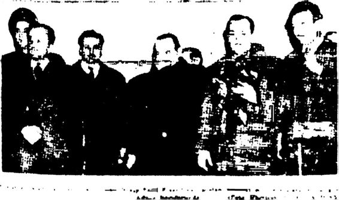 Necip Fazıl Kısaküreh humar eynarken suçüslü yabalandı Sorgusunda N. Kazıl kumarhaneye edebi Akiklerde bulunmak için gittiğini söyledi i V ■ r Karaca, Necip Fazıl’ın da adı karışan kumarhane baskını gazetelere böyle yansımıştır.a g söylemiştir. 30 Mart 1950 tarihli Büyük Doğ«’nun 54. sayısını “İşgal Ordusu Gazetelerinden Beter: Sözde Türk Kültür Basını” başlığıyla ya yımlayarak kendisine komplo düzenlendiğini iddia etmiştir. Halbuki aynı olayı 1970’te “Efe ve külhani soyundan silahlı bir adam” temin etmek için söz konusu kumarhaneye gittiği şeklinde anlatmıştır. Ve olayı DP’nin siyasi komplosu olarak sunmuştur. Ancak çok değil, bu olaydan 20 gün kadar önce, DP’nin İzmir İl Kongresi’nde Menderes’in konuşmasını çok beğendiği için mecmuasında ona övgüler dizmiştir. İşin özü şu ki, Necip Fazıl kendisini takip eden muhafazakâr kitleleri hayal kırıklığına uğratmamak için kumar tutkusuna kılıf bulmaya ça lışmış ama doğrusu çok da başarılı olamamıştır.
Necip Fazıl ın alkol tutkusu da vardır. Ancak ölçülüdür. Kumar tutkusu ise neredeyse bir hastalık halini almış, alay konusu olmuştur. Bir keresinde Eşref Şefik’in kendisine ilaç alması için verdiği parayı kumarda kaybetmesi üzerine çok sinirlenen Eşref Şefik’in dışkı dolu bir lazımlığı “üstadın” kafasından aşağı boca ettiği edebiyat çevrelerinde sıkça anlatılan bir olaydır. Mina Urgan da Bir Dinozorun Anıları adlı kitabında bu olayı şöyle anlatmıştır:
“Necip FazıVtn içkisi ölçülüydü. Ama kumar tutkusu sınır tanı mazdı. Eşref Şefik, annemizin çocukluk arkadaşı olduğu için onun ağzından da dinlemiştik bunu: Eşref Şefik hastaymış; onu yoklamaya gelen Necip FazıVa ilaç alması için bir miktar para vermiş. Necip Fazıl ilaçları hemen alacağını söyleyip evden çıkmış. Eşref Şefik beklemiş, beklemiş ne ilaçlar varmış ortada ne de Necip Fazıl. Sabaha doğru bir lazımlığı çişle doldurmuş; ateşi çok yükseldiği halde pencerenin önün de pusu kurmuş; lazımlığı, kumarhaneden eli boş dönen Necip FazıVtn başından aşağı boca etmiş. Bu öyküden de anlaşılacağı gibi Necip FazıVtn yüzsüz bir yanı vardı.”
Necip Fazıl, Büyük Doğu dergisini Büyük Doğu Hareketi haline getirmek istemiştir. Bu amaçla 15 Haziran 1951 tarihli Büyük Doğu’da Büyük Doğu Cemiyeti’nin ana nizamnamesini yayımlamıştır. Nizam nameye göre, “Cumhuriyet’in en ileri gerçek mefkûreleşmiş nevii” olan Başyiicelik devletçinden söz edilmiştir. Bu nizamnameye göre CHP’nin Altı Oku’na karşılık Büyük Doğu Mefkûresi’nin “Dokuz Umde”si (Ruh çuluk, ahlakçılık, milliyetçilik, şahsiyetçilik, cemiyetçilik, keyfiyetçilik, nizamcılık, müdahalecilik, sermayede tahdit) vardır. CHP’nin Ebedi ve Milli Şefine karşılık İslami bir ulu olan ‘Başyüce’ vardır. En önemlisi de TBMM’de “Hâkimiyet Milletindir” yazarken, Yüceler Kurultayı’nda “Hâkimeyet Hakkındır” yazacaktır. Başyücelik devletinde sosyal prob lemler İslam hukukundaki “kısas” yöntemi ile çözülecektir. Örneğin ci nayetin cezası şehir meydanlarında idamdır. Hırsızlığın cezası kolun ke silmesidir. Faiz, dans, heykel, zina, fuhuş, kumar, içki, uyuşturucu ve her türlü keyif verici madde yasaktır. Sinema devletin kontrolünde olacak, kahvehaneler kapanacaktır. Necip Fazıl bu düşüncelerini 1968’de İdeo locya Örgüsü adlı kitabında şöyle ifade etmiştir: “Türk vatanının yalnız Müslüman ve Türklerle meskûn, yalnız Türkler ve Müslümanlardan iba
ret bale gelmesi, hain ve muzlim unsurlardan baştan başa temizlenmesi için her türlü tedbir alınacaktır.” “İslam inkılâbı orducudur” ve “özenle yetiştirilecek subaylar,” “orducu Büyük Doğu idealinin icrada mihrak şahsiyetidir” ve “Büyük Doğu militarizması, bütün insanlığa icabında tam bir vicdan hürriyeti, icabında da operatör bıçağı gibi cebir ve zorla tatbik edilecek bir ideal manivelasıdır. ”
Açıkça görüleceği gibi Necip Fazıl 1951 yılında iktidara gelip ilk icraatlarını din alanında yapan DP’den de cesaret alarak çok açık bir şekilde çağdaş Cumhuriyet’e meydan okuyarak laikliği, sosyal hukuk devletini ve demokrasiyi hiçe sayıp kaba bir “şeriat düzenini” savun makta, hatta bu düzeni “Başyücelik devleti” diye kendince kuramsal bir çerçeveye oturtmaktadır. Necip FazıFın 1951’de Büyük Doğu dergisin de kuramsal çerçevesini belirlediği bu görüşler, Adnan Menderes’ten R. Tayyip Erdoğan’a kadar bütün sağcı başbakanların “gizli ajandaların da”, “bilinçaltlarında” hep bir şekilde varlığını korumuştur.
1952 yılında Necip Fazıl, DP lideri Adnan Menderes’le görüşerek kendisini ve dergisini hükümetin hizmetine sunmaya hazır olduğunu, bunun için himaye edilmesi gerektiğini belirtmiştir. Bunun üzerine Menderes, Necip Fazıl’dan Büyük Doğu’yu günlük gazete olarak çı karmasını istemiştir. Menderes o görüşmede Necip Fazıl’a Ahmet Salih Korur aracılığıyla 5000 liralık bir avans vermiştir.
Necip Fazıl hem iktidarın desteğini hem de paranın kokusunu al mıştır bir kere! Bu nedenle sık sık Menderes’e mektup yazmış ve bu mektuplarda sık sık Menderes’ten dergisi/gazetesi için para istemiştir. 0 mektuplarından birinde Menderes’i şöyle yüceltmiştir:
"... Müslümanlar İslam cemiyetinin namaza davet eden sesini (Agora) nidası halinde Allah kelamının diliyle yükseltmekte serbest ol duklarını gösterdiğiniz günden, İzmir'deki meşhur hitabenize kadar, gözyaşlarına boğulmuş öyle anlar geçirdik ki, iht 'ıyarsızca kendi kendi mize sorduk: ‘Yoksa beklediğimiz kahraman bizzat Adnan Menderes midir?(...) Siz, her parti alakası dışında, Adnan Menderes olarak, bu vatanın şiddetle muhtaç olduğu ve en hassas dakikada başında bulun duğu ender zekâ ve ruhlardan biriydiniz. ”
Mektuplarında Menderes’i yere göğe sığdıramayan, iltifat yağmu runa tutan Necip Fazıl, bu arada örtülü ödenekten para almaya da başlamıştır. Örneğin Necip Fazıl, Menderes destekli Büyük Doğu'nun çıkışının ilk haftasında Ankara’ya gelip örtülü ödenekten 1000 lira alıp resmi ilanları da bağlayarak geri dönmüştür.
Necip Fazıl’ın Büyük Doğu'da, Beyoğlu’nda bir mason kulübün den elde edilen belgeleri yayımlayıp bazı tanınmış kişilerin masonluğunu ifşa etmesi Menderes’i ve DP'vi rahatsız etmiştir. Başbakan Yardımcı sı Samet Ağaoğlu, Necip Fazıla arayarak masonlar hakkındaki yayını durdurmuş ve Başbakan Adnan Menderes’in isteği ile Büyük Doğu 19 Eylül 1952’de “Tünele Giriyoruz" yazısıyla kapanmıştır. Necip Fazıl'ın “masonlar” konulu yazı dizisinin Menderes’i, Büyük Doğu der gisini kapattıracak kadar rahatsız etmesi düşündürücüdür. Bu durum Menderes’in ve bazı önemli DP’lilerin “mason” olduğu yolundaki iddia ları akla getirmektedir. Menderes, iktidarı boyunca masonlarla içli dışlı dır. Devletin önemli kademelerine masonları getirdiği söylenmiştir. Hat ta Menderes 1957 yılında mason locasına üye olan Ahmet Salih Korur, Celalettin Tevfik Karasapan ve Hüseyin Avni Göktürk’ü MİT’in başına getirmiştir. Menderes’in Başbakanlık Müsteşarı ve sağ kolu olan Korur, Hür ve Kabul Edilmiş Masonlar Büyük Locası’nın Üstadı Azam’ıdır.
“ Ancak masonlar üzerinden teşkilata nüfuz etme planı, asker tarafından bozuldu." Anlaşılan Menderes’in bir “üstadı” başka bir “üstadı”yla kafa kafaya gelmiş, bu durum Menderes’i korkutmuştur.
Daha önce solcu Tan Matbaası’nın basılmasına yol açan Necip Fazıl’ın Büyük Doğu'daki kışkırtıcı yayınları şimdi de bir gazeteciye suikast düzenlenmesine yol açacaktır. 1952 yılında Büyük Doğu'nun, dönmelerin, masonların ve Yahudilerin çığırtkanı ve bir İslam düş manı olarak tanıttığı gazeteci Ahmet Emin Yalman, 1952 Kasımı’nda Malatya’da Hüseyin Üzmez adlı bir genç tarafından yaralanmıştır, (gü nümüzün tacizci gazetecisi). Saldırının Büyük Doğu Cemiyeti üyelerince düzenlendiği iddia edilmiştir. Necip Fazıl, A. Emin Yalman’a düzenle nen suikast öncesinde sahibi olduğu Büyük Doğu dergisinde şu baş lıklar altında kışkırtıcı yayınlar yapmıştır: "Beynelmilel Münafık” (20 Haziran 1952), "... Yalnız şuna şaşırıyoruz. Nüfusu 1 milyonu aşan bir Türk şehrinde nasıl yaşıyor, nasıl yaşatılıyorsun, hayret?” (12 Ağustos 1952), “Bu milletin ekmeğini yiyip yurdunda oturan namus düşmanı ve vatan hainlerinin yok edilmesini bir an evvel görmek istiyoruz" (12
Ağustos 1952). Bunun üzerine 1952 yılının sonunda Necip Fazıl tu tuklanmış, yargılanmış ve mahkûm olmuştur. 12 Aralık 1952’de Üskü dar Toptaşı Cezaevi’nde, sonra Malatya ve Ankara cezaevlerinde 1 yıl hapis yattıktan sonra 2 Aralık 1953’te tahliye olmuştur.
Ahmet Emin Yalman Suikastı ve İstanbul’da gayrimüslimlerin mallarının yağmalanmasıyla sonuçlanan 67 Eylül 1955 olayları so nunda Adnan Menderes, Necip Fazıl’dan ve Büyük Doğu'dan biraz uzak durmaya karar vermiştir. Necip Fazıl ile Menderes arasında geçi ci olarak dondurulan ilişki 1956’da yeniden başlamıştır. Menderes, Necip Fazıl’a Büyük Doğu’yu yeniden çıkarması için bir kere daha yardım etmiştir. Menderes, ilk aşamada Necip Fazıl’a 30.000 lira ver miştir. Ancak Necip Fazıl bu parayı az bularak şöyle eleştirmiştir: "... Yine 30.000 lira. Başka bir gazetenin prova baskılarına yetmeyecek olan bu para 1952’de olduğu gibi benim çıkaracağım günlük gazeteye yeter kabul edilmektedir.”'
Necip Fazıl, Büyük Doğu'nun yeniden yayına başladığını “Tü nelden Çıkıyoruz” diye okurlarına duyurmuştur. Necip Fazıl Büyük Doğunun bu yeni döneminde sürekli Menderes’ten para isteyecektir.
Liranın Sırrı Necip Fazıl, 19561960 arasında “Büyük Doğu”yu yeniden çı karmıştır. Orada hem CHP’yi; İnönü’yü, Atatürk’ü ve erken dönem Cumhuriyet’i eleştirerek hem de DP’nin propagandasını yaparak Menderes’ten yüklü miktarda para sızdırmıştır. Bu amaçla Menderes’e çok sayıda mektup yazmıştır.
Örneğin 26 Mart 1956 tarihli mektubunda toplam 37.000 liraya ihtiyacı olduğunu yazmış, 1 Mayıs 1956 tarihli mektubunda “Şu anda 10001300 liralık varidatı bilhesap gördüğüm halde henüz hiçbir tahsilat yapabilmiş değilim,” demiş.
2 Haziran 1956 tarihli mektubunda, “Birinci sınıftan derhal resmi ilan. Haziran ortasında 10.000 lira. Emrinize şiddetle muhtacım. Geri si biiznillah kolay... Ellerinizden öperim/' demiş, S Haziran 1956 tarihli mektubunda, “Birinci sayfadan resmi ilan almaya başlayacağım andan itibaren her ay 89 bin lira kârım olaca ğım, aksi halde her ay İS.000 lira zarara devam edeceğimi müteaddit vesilelerle arz etmiştim. Günlük satışım olan 1000 lira umumi masra fımdan 700800 lira eksiktir ve esasen ilansız Türkiye’de hiçbir gazete çıkmaz, ne satsa kendini koruyamaz/' demiş, 4 Temmuz 1956 tarihli mektubunda "... Bana sadece bir defalık katiyen ve katiyen ilansız, şusıız, busuz olarak on beş bin (İS.000) lira lütuf ediniz ve kitap neşriyatı da dahil büyük bir neşriyat evi kurmamı temin buyurunuz. Bu arada kalbim de şifa bulacaktır. İhtiramlarımla," demiş, Ekim 1956 tarihli mektubunda, “Bir miktar para bularak mat baaya kâğıdı yatırdım. Eksiğim 7000 liradır. Bana bunu artık ne ilan ne başka bir yardım talebison defa olarak lütfederseniz ben de geçen defaki imkânıma nazaran hata edip de haftalık şekilde çıkarmadığım organımı, içinde pırıldayan rüya şartlarına erdirebileyim. (...) Ebedi yen sizin olarak ellerinizden öperim" demiş, 26 Kasım 1956 tarihli mektubunda, “Bugün bin bir fedakârlıkla üç tıüshaltk matbaa ve kâğıt bedelim temin ettiğim mecmuamı kurmak için muhtaç bulunduğum (7000) lirayı son defa olarak bana lütfetme nizi ve artık bir daha yardım mevzuunda benden hiçbir rica dinleme yerek zaferimi müşahede buyurmanızı istirham ediyorum," demiştir.
Necip Fazıl 1957 yılında tekrar hapse düşmüştür. 24 Haziran 1957 tarihinde Menderes’e yazdığı mektupta eşi Neslihan Kısakürek’e yardım edilmesini istemiştir. “Şu anda elimde bir çanta Hilton Oteli’ne gider gibi zindanın yolunu tutuyorum. Evimin iki günlük geçimi bile mevcut olmadığı için Muhlis Fer vasıtasıyla tebliğ ettiğiniz 3000 lira yardımın Müsteşar Bey’in Ankara’ya döndüğü gün hemen aşağıdaki adrese gönderilmesini hararet ve hassasiyetle rica ederim. En küçük teehhürün evimi aç bırakacağını arz eder ve ebedi bağlılık hislerimin Başvekil Beyefendiye iblağım istirham ederim,” demiştir. Başbakan Adnan Menderes, Necip FazıPın bu ricasına da kayıtsız kalmayarak Kısakürek ailesine 3000 lira yardım etmiştir.
19 Ağustos 1957 tarihli mektubunda, “Günlük gazeteye memur edileceksem bana bir banka kredi açar, bu kredi 150.000 lirayı geç mez, hakkım olan resmi ilan verilir, ben de o zaman gazetenin ne de mek olduğunu gösterir, borcumu en kısa zamanda öder, büyük mana ve madde tesisini kurarım. Haftalık organa memur edileceksem bu iş bir defalık 25.000 lira davasıdır...” demiştir.
Necip Fazıl’ın özellikle hapisten Menderes’e yazdığı mektuplara pek yanıt alamadığını yine Necip Fazıl’ın bir mektubundan anlıyoruz. 16 Eylül 1957 tarihli mektubunda Menderes’e şöyle ağlamıştır üstat:
“Ağlıyorum... (...) Beni nasıl bu halde yalnız bırakıyorsunuz? Cenabı Hak üzerine söylüyorum ki, evimi, bütün halı parçalarını, karım kürkünü ve yüzüğünü rehine vermiştir. İlk lütfunuzun 3 ay evvelki 3000 lirabüyük bir kısmı cezayi nakdilere gitti. Çoluk ço cuğum açtır ve bu hal beni öldürmeye kâfidir. Telefonumu kestiler. Bugün eve bir imkân haberi verilse haberi almalarına imkân yoktur. Zevcem o kadar teşebbüs ruhundan uzak bir kimsedir ki, ölünceye ka dar aç kalır da sokağa çıkmayabilir. Akıl ve şuurumu Allah'a emanet etmiş bulunuyorum. Şeker hastasıyım; asabi halde müterafık olarak bu hastalık bir mahkûmun zindanda bulunmasına manidir. En küçük bir himayeniz ve hakkı iltizamınız bana derhal altı aylık bir tebdili hava verdirtebilir. Seçimlerde emrinizde olurum. Gazetelerinizde imzasız ça lışabilir, icabında seyahatler yaparım, nihayet kurtulurum. Maraş’tan parti adayı olarak namzet gösterilmem için Parti Genel Başkanlığı’ha bir istida yazdım ve Tevfik İleri’ye gönderdim. Ne olacak, hakkımda ne düşünülecek bilmiyorum. Allah’ın rızası ve Resulü’nün ruhaniyeti adına himaye elinizi uzatınız. Aç evim, zindanda muzdaribim ve feci hanem ve namzetliğim bahsinde isterseniz hep birden, isterseniz bir ikisinden beni koruyunuz...”
Necip Fazıl 1958’de hapisten çıkıp da yeniden Büyük Doğu’yu çıkarmaya karar verir vermez yine Menderes’e mektup yazarak para istemiştir. 19 Kasım 1958 tarihli mektubunda, “8 aylık kredi ile Büyük Doğu yu muazzam bir haftalık halinde çıkarmamı temin buyuracak ve elime ilk masraflar için yalnız İS.000 lira lütfedecek olursanız, hu defa gayet temkinli, vakarlı, hesaplı, bütün klarnetimi saf fikir, sanat ve ilim sahasında gösterecek fevkalade ve payidar organı kurabilirim. Mem leket birdenbire doğacak ve artık batmayacak bir güneşin ışığı altında sizi yeniden ve hayran hayran seyre başlar..." demiştir.
Necip Fazıl, 27 Mayıs 1960 İhtilali’nin ardından yapılan Yassıada duruşmalarında örtülü ödenek davasından yargılanmış ve 19521960 arasında Menderes'ten para aldığını kabul etmiştir. Necip Fazıl bu ko nuda mahkeme başkanına şunları söylemiştir: “Evet, ben örtülü öde nekten para aldım. Ne aldığımdan ziyade, neden aldığım mühimdir. Ben örtülü ödenekten methiyeci, kasideci. Eski Roma cezaevlerinde sahte ağlayıcılar gibi vicdan kiracısı olarak para almadım. Ve bunlar dan hiçbirisini yapmadım. 1954’ten 1960’a kadar taştan taşa vurulan, zindandan zindana süründürülen mukaddesatçı, milliyetçi, Anadolucu ahlakçı bir idealin himayesi yolunda para aldım ve bunu bir hakkında en tabii..."
Peki, ama Necip Fazıl Büyük Doğu'yu çıkarmak için Menderes’ten toplamda ne kadar para almıştır? Kendisi bunu Benim Gözümde Men deres adlı kitabında şöyle açıklamıştır:
“Örtülü ödenekten bana verilenleri 147.000 lira olarak tespit et mişlerdi. 1952’den 1960’a kadar iki kere günlük, bir defa da haftalık gazete çıkarmam için verilen, üstelik en saf niyete gazeteme ve davama tahsis ettiğim için yetersizliği yüzünden evimdeki baba mirası eşyayı da götüren ve beni çeneme dek borca batıran para... (...) 147.000 sırf İslami gayeye yol bulabilmek için, olduğu gibi pişirdiğim yemeğe gitti. Üstelik cebimde ve kilerimdekileri de silip süpürdü.”
Menderes hakkındaki iddianamede Necip Fazıl’la ilgili şu suçla malarda bulunulmuştur:
“Din istismarcılığını geçim vasıtası yapan, muhalefet liderine yazıları ile tecavüz eden Necip Fazıl’a yekünü 147.000 lirayı tutan ödemelerde bulunulmuş, sözü geçen bir suçtan mahkûm olduğu bir sırada karısı Neslihan Kısakürek’e de muhtelif zamanlarda 5000 lira verilmiştir. ”
Necip Fazıl, 19521960 yılları arasında DP lideri Başbakan Ad nan Menderes’e yazdığı mektuplarda çok açık bir şekilde görüldüğü gibiBüyük Doğu dergisini yayımlamak için bıkıp usanmadan sürekli para istemiştir. Birçok defa, “Bana son bir defa olmak üzere şu ka dar para lütfederseniz, söz veriyorum bir daha bu konuda sizi rahat sız etmeyeceğim'.” demesine karşın, kısa süre sonra bu sözünü unutup bir kere daha para istemiştir. Dahası Necip Fazıl sadece Büyük Doğu dergisini yayımlamak için değil, şahsi ihtiyaçları için, ailesinin geçimi için de Menderes’ten birçok defa para istemiştir. Görülen o ki, “üs tat” kalemini DP ve Menderes lehine konuşturmak için örtülü öde nekten değişik aralıklarla tamı tamına 147.000 lira almıştır. Necip Fazıl bu parayla çıkardığı Büyük Doğu dergisinde bir taraftan şeriat propagandası ve DP yandaşlığı yaparken, diğer taraftan CHP karşıtlı ğı, Atatürk ve İnönü düşmanlığı yapmıştır. Bu 147.000 liranın dışın da Menderes’in zamanının büyük bir kısmını geçirdiği İstanbul Park Otel’deki harcamalarının tutarı da (19541960) 802.675 liradır.
Peki, ama Necip Fazıl gerçekten de Menderes’ten aldığı paranın tamamını “dava uğruna” dergi çıkarmak için mi harcamıştır, yoksa bu paranın önemli bir bölümünü kumarda mı tüketmiştir? Üstadın kumar tutkusunu hiç yenemediği ve aldığı 147.000 liraya rağmen hep para sıkıntısı çektiği düşünülecek olursa örtülü ödenekten aldığı paralarının en azından bir kısmıyla kumar oynadığı düşünülebilir. Yoksa üstat, İstanbul Park Otel’de 802.675 lirayı nereye harcamış olabilir ki?
Necip Fazıl, 27 Mayıs 1960 İhtilali olduğunda DP’nin 1951’de çıkardığı Atatürk’ü Koruma Kanunu’na muhalefetten hapishanededir. 1.5 yıllık cezasını tamamlayıp 18 Aralık 1961 günü hapisten çıkmış ve 1962 yılı Ocak ayında DP’li Selim Ragıp Emeç’in gazetesi Son Posta’da yazmaya başlamıştır.
Daha sonra Necip Fazıl konferanslar vermek için Türkiye’nin çe şitli illerine gitmiştir. Hikâyeler yazmıştır, bunlar 1964 ve 1970’te ba sılmıştır. 12 Eylül 1980 Darbesi’ni “şahlanış” olarak değerlendirmiştir.
Necip Fazıl 25 Mayıs 1983 günü vefat etmiştir.
Başbakan R. Tayyip Erdoğan, 28 Mayıs 2013 tarihli grup konuş masında bu Necip Fazıl’dan şöyle söz etmiştir: “Nesillere istikamet çizmekle geçen ömründe sadece teoriyle meşgul olmamış, eğilmeden 159
bükülmeden hayatını da bir miras olarak bize devretti. ” Necip FazıPın “nesillere istikamet çizdiği” doğru, ama bu istikametin iyi bir istikamet olduğu çok şüpheli. Necip Fazıl’m “eğilmeden bükülmeden” bir ha yat sürdüğü ise hiç de doğru değil. Sadece Menderes önünde defalarca eğilip büküldüğünün belgelerini biraz önce gördünüz.
Necip Fazıl, 25 Mayıs 1980’de Türk Edebiyatı Vakfı’nca “Sulta nü’ş Şuara” (Şairler Sultanı) ilan edilmiştir. Bu haberi kendisine ulaştı ranlara, “Unvanı boş verin, para var mı para!” demiştir.
Karşı Devrim’in Kara Kutusu Necip Fazıl Necip Fazıl, Siyasal İslam ve ABD Necip Fazıl, 1946’dan sonra “rejim karşıtı”, 1950’den sonra ise “re jim düşmanı” haline gelmiştir. Daha önce de ifade ettiğimiz gibi Necip Fazıl’ın bu değişimi Türkiye’nin değişimiyle yakından ilişkilidir. II. Dün ya Savaşı sonrasındaki soğuk savaş döneminde komünist Rusya’ya karşı, kapitalist ABD’ye yakınlaşan Türkiye, ABD’nin “Yeşil Kuşak Projesi”nin ilk adımları çerçevesinde dine ağırlık vermiştir. Komünizm zehirinin pan zehiri olarak dini gören ABD, Türkiye, İran, Afganistan gibi komünist Rusya’ya yakın İslam ülkelerinde “dinci” akımların gelişmesine özel bir önem vermiştir. İşte ABD’nin bu politikasıyla Necip Fazıl’ın rejim yan daşlığını bırakıp rejim muhalifliğine soyunarak din propagandası yapma sı üç aşağı beş yukarı aynı döneme denk gelmektedir.
1950’lerde Türkiye’de antikomünizmin bayraktarlığını yapan Necip Fazıl, Adnan Menderes’in DP’sini desteklemiştir. DP’nin Ame rikancılığı ise herkesin malumudur. DP, Türkiye’yi kayıtsız koşul suz ABD’ye teslim etmekle kalmamış, ABD isteği ve desteğiyle İslam dünyasının liderliğine soyunarak çevredeki İslam ülkelerini komünist Rusya etkisinden çıkarıp emperyalist ABD etkisine sokmaya gönüllü olmuştur. 1952’de ABD Başkanı Eisenhovver’ın dışişleri bakanı olan John Foster Dulles, Ocak 1953’ten itibaren SSCB’yi güneyden kuşa tacak örgütler kurmak amacıyla Ortadoğu’daki İslam ülkelerini gezmiştir. Dulles, Ortadoğu İslam ülkelerinin bir araya gelmesiyle oluştu rulacak Panislamist cephenin başına Türkiye’yi geçirmeyi düşünmüş, bu düşüncesi Adnan Menderes tarafından kabul edilmiş ve Türkiye ile Irak 24 Şubat 1954’te SSCB’ye karşı Bağdat Paktı’nı kurmuştur. 1956 yılında ABD Dışişleri Bakanı F. Dulles şu beyanatı vermiştir: “Din ve siyaset birbirinden ayrılamaz. Dünya meselelerini halletmek hususun da seçeceğimiz yol dini görüştür. Ümit ediyoruz ki Sovyet liderleri iş iş ten geçmeden Allah fikrine bağlılığın, vatanperverliğin, beşeri haysiyet ve vakarın daima kalplerde yaşayacağına inansınlar.” Görüldüğü gibi 1950’lerde ABD Türkiye’ye laiklikten vazgeçip dine yönelmesi ni öğütlemiştir. ABD’nin bir dediğini iki etmeyen Menderes de hemen harekete geçip laikliği aşındıracak din eksenli politikalar uygulamıştır. Menderes işte bu süreçte Necip Fazıl’a kesenin ağzını açmıştır.
Necip Fazıl’ın Büyük Doğu dergisinin yayın çizgisinin 1946’daki ani değişimini de bu çerçevede değerlendirmek gerekir.
“Bu dergi yayına başladığı 1943’ten 1946’ya dek Siyasal İslam cılık yapmayan, tersine Oktay Akbal, Suphi Nuri İleri, Hüseyin Cahit Yalçın gibi Siyasal İslamcılığa karşıt çok sayıda yazarı bir araya getiren bir düşün dergisiydi. Bir CIA Ortadoğu uzmanının Türkiye’yi Müs lüman ülkelerin önderliğine çağıran yazısı 31 Ocak 1946 günlü Mil let dergisinde yayımlanır yayımlanmaz Necip Fazıl’ın Büyük Doğu’su da anında ABD’nin bu isteğini savunan dingilder bir dergi olup çık mış, dinin siyasallaştırılmasına karşıt yazıları bir çırpıda dışlayarak, bilimgüderliği (laikliği) kötüleyen, Atatürk’ü ve Türk Çağdaşlaşma Devrimi’ni karalayan, Türkiye’deki Müslümanları, HıristiyanSiyonist ABD’nin buyruğuyla Katolik Papa’mn da onayladığı bir Dünya İslam Birliği kurmaya çağıran Panislamist Osmanlıcıİslamcı bir dergi olup çıkmıştır. ”
İBDAC ve PKK Üzerindeki Necip Fazıl Etkisi Necip Fazıl, îslami Büyük Doğu Akıncıları İBDA’nın fikir baba sı ve kurucularındandır. Örgütün çıkış noktası Necip Fazıl’ın “Bü yük Doğu Cemiyeti”dir. Bu cemiyetin üyelerinden ve Necip Fazıl’ın takipçilerinden Mirzabeyoğlıı, Başyücelik Devleti adlı kitabında İsla mi Büyük Doğu’nun şeri anayasasını açıklamıştır. Amaç Türkiye ön derliğinde Dünya İslam Birliği düşüncesini hayata geçirmektir. Cengiz Özakıncfnın dediği gibi, “(Bu düşüncenin) gerçek kuramcısı Miislii man Necip Fazı! Ktsakiirek ya da bir başka yerli İslamcı değil, kendisi ni Yahudiİslaın Birliği'ııin önderi olarak tanımlayan HıristiyanSiyo nist Amerikan Devletiydi. ”
Necip Fazıl, Mısır’daki Müslüman Kardeşler Cemiyeti (İhvanı Müslimin) ile ilişkileri nedeniyle tutuklanmıştır. Fransa’nın Ankara Büyükelçisi İ. T. Saint Flardovvin, Necip Fazıl’ın Başbakan Adnan Menderes ve yardımcısı Samet Ağoğlu ile kurduğu yakın ilişkilerle Türkiye’yi şeriata dönüştürmeyi amaçladığını ve bu çerçevede Ka hire'deki Müslüman Kardeşler ile Tahran’daki Müslüman Fedailer Örgütü’nün ilişki içinde olabileceklerini hükümetine bildirmiştir.
1984'te PKK ile birlikte eylemlerine başlayan İBDAC, Ameri kancıİslamcı Necip Fazıl çizgisini izlemiştir. Hizbullah da Necip Fazıl çizgisindedir. 1990’ların sonunda öldürülen Hizbullah lideri Hüseyin Velioğlu, Necip Fazıl’m Akıncılar adlı müritlerinden olduğunu itiraf etmiştir.
İBDAC ve Hizbullah gibi PKK’nın fikir babası da İslamcı Necip Fazıl’dır. Nitekim PKK’nın başı Abdullah Öcalan bu gerçeği, “Ne cip Fazıl Kısakiirek’in konferanslarına gittim. Komünizmle mücadele derneğinin düzenlediği Refik Korkut'un konferanslarına katıldım, diye ifade etmiştir. PKK lideri bölücü başı Abdullah Öcalan öncele ri son derece dindar biridir. Uğur Mumcu’nun anlattığına göre Öca lan, 1960’larda Ankara Tapu Kadastro Lisesi’nde okurken Maltepe Camii’nde namazlara gitmiş, antikomünist yazarların konferanslarına katılmış son derece muhafazakâr bir öğrencidir. Öcalan PKK’yı kur madan sadece altı ay önce 24 Mayıs 1978’de Kesire Öcalan’la imam nikâhıyla evlenmiştir. PKK ve İBDAC el ele Türkiye Cumhuriyeti’ni parçalamayı amaçlamıştır. Kürtçülük ve dincilik her zaman olduğu gibi yine birlikte hareket etmiştir. Öcalan’ın bu “dindar” görünü mü nedeniyle PKK’yı kurduğunda Güneydoğu’daki bazı imamlar bile PKK’ya katılmıştır. Necip Fazıl’ın konferanslarından, yazıların dan beslenen PKK lideri Abdullah Öcalan’ın yakalandıktan sonraki ilk sözü “Kur’an hakkı için, benim anam da Tiirktür, bana bir görev verilirse ben Türkiye’ye çok hizmet edeceğim,” olmuştur. Tutuklu bulunduğu İmralı’da kardeşiyle yaptığı görüşmede köyünde kendisine cami gibi bir yer yapılmasını istemiştir.
Cengiz Özakıncı; Necip Fazıl, İBDAC ve PKK ilişkisini, ABD et kisini de göz önünde bulundurarak şöyle açıklamıştır:
“1984’te silahlı eylemi benimseyen İBDAC ve Hizbullah gibi ör gütlerin cihat yoluyla İslami Büyük Doğu vb. gibi adlar altında ger çekleştirmek istedikleri Osmanlı Eyalet Düzeni, Batı emperyalizminin başını çeken Amerika’nın verdiği adla Yakındoğu Federasyonundan başka bir şey değildi ve bu Amerikan patentli düzen bölücü örgüt PKK’nın da evet diyeceği bir düzendi. Amerika, Siyasal İslamcıları da bölücüleri de sonu Türkiye Cumhuriyetinin dağılmasına varacak bir ülküyle donatmıştı. Sonunda gazetelere yansıdı ki, Amerikancıİslam cı Necip Fazıl’ın öğrencilerince kurulan İBDAC, Hizbullah vb. gibi silahlı İslamcı örgütlerle Necip Fazıl’ın diğer bir öğrencisince kuntlan silahlı bölücü örgüt PKK, Türkiye Cumhuriyeti devletini yıkmak üzere eylem birliği yapıyorlar. ”
Necip Fazıl, 1950’den itibaren Kürtçü harekete tarihsel derinlik kazandırmak için de bir hayli uğraşmıştır. Örneğin bu amaçla Büyük Doğu dergisinde genç Cumhuriyet’i, Kürtleri katletmekle suçlamıştır. 1950 yılında Büyük Doğu dergisinde Dersim’de çoluk çocuk, kadın erkek 50.000 Kürdün “ısırgan otu gibi doğrandığını” iddia etmiştir. Böylece benim “Dersim Duygu Sömürüsü” diye adlandırdığım sürecin ilk adımını atmıştır. Genç bir öğrenciyken Necip Fazıl’ın konferans larını dinleyen, yazılarını okuyan Abdullah Öcalan, biraz da Necip Fazıl’ın bu Dersim yalanlarının etkisiyle PKK’yı kurup Cumhuriyetken intikam almaya karar vermiştir.
takipçilerinden Mirzabeyoğlu, Başyiicelik Devleti adlı kitabında İsla mi Büyük Doğu'nun şeri anayasasını açıklamıştır. Amaç Türkiye ön derliğinde Dünya İslam Birliği düşüncesini hayata geçirmektir. Cengiz Özakıncfnın dediği gibi, “(Bu düşüncenin) gerçek kuramcısı Müslü man Necip Fazıl Kısakiirek ya da bir başka yerli İslamcı değil, kendisi ni Yahudiİslam Birliğinin önderi olarak tanımlayan HıristiyanSiyo nist Amerikan Devletiydi. "~ Necip Fazıl, Mısır'daki Müslüman Kardeşler Cemiyeti (İhvanı Müslimin) ile ilişkileri nedeniyle tutuklanmıştır. Fransa’nın Ankara Büyükelçisi İ. T. Saint Hardovvin, Necip Fazıl’ın Başbakan Adnan Menderes ve yardımcısı Samet Ağoğlu ile kurduğu yakın ilişkilerle Türkiye’yi şeriata dönüştürmeyi amaçladığını ve bu çerçevede Ka hire'deki Müslüman Kardeşler ile Tahran’daki Müslüman Fedailer Örgütü’nün ilişki içinde olabileceklerini hükümetine bildirmiştir.
1984’te PKK ile birlikte eylemlerine başlayan İBDAC, Ameri kancıİslamcı Necip Fazıl çizgisini izlemiştir. Hizbullah da Necip Fazıl çizgisindedir. 1990’ların sonunda öldürülen Hizbullah lideri Hüseyin Velioğlu, Necip Fazıl’ın Akıncılar adlı müritlerinden olduğunu itiraf etmiştir.
İBDAC ve Hizbullah gibi PKK’nın fikir babası da İslamcı Necip Fazıl’dır. Nitekim PKK’nın başı Abdullah Öcalan bu gerçeği, “Ne cip Fazıl Kısakiirek’in konferanslarına gittim. Komünizmle mücadele derneğinin düzenlediği Refik Korkut’un konferanslarına katıldım,”diye ifade etmiştir. PKK lideri bölücü başı Abdullah Öcalan öncele ri son derece dindar biridir. Uğur Mumcu’nun anlattığına göre Öca lan, 1960’larda Ankara Tapu Kadastro Lisesi’nde okurken Maltepe Camii’nde namazlara gitmiş, antikomünist yazarların konferanslarına katılmış son derece muhafazakâr bir öğrencidir. Öcalan PKK’yı kur madan sadece altı ay önce 24 Mayıs 1978’de Kesire Öcalan’la imam nikâhıyla evlenmiştir. PKK ve İBDAC el ele Türkiye Cumhuriyeti’ni parçalamayı amaçlamıştır. Kürtçülük ve dincilik her zaman olduğu gibi yine birlikte hareket etmiştir. Öcalan’ın bu “dindar” görünü mü nedeniyle PKK’yı kurduğunda Güneydoğu’daki bazı imamlar bile PKK’ya katılmıştır. Necip Fazıl’m konferanslarından, yazıların dan beslenen PKK lideri Abdullah Öcalan’ın yakalandıktan sonraki ilk sözü “Kur’an hakkı için, benim anam da Türktür, bana bir görev verilirse ben Türkiye’ye çok hizmet edeceğim,” olmuştur. Tutuklu bulunduğu İmralı’da kardeşiyle yaptığı görüşmede köyünde kendisine cami gibi bir yer yapılmasını istemiştir.
Cengiz Özakıncı; Necip Fazıl, İBDAC ve PKK ilişkisini, ABD et kisini de göz önünde bulundurarak şöyle açıklamıştır:
“I984’te silahlı eylemi benimseyen İBDAC ve Hizbullah gibi ör gütlerin cihat yoluyla İslami Büyük Doğu vb. gibi adlar altında ger çekleştirmek istedikleri Osmanlı Eyalet Düzeni, Batı emperyalizminin başını çeken Amerika’nın verdiği adla Yakındoğu Federasyonundan başka bir şey değildi ve bu Amerikan patentli düzen bölücü örgüt PKK'nın da evet diyeceği bir düzendi. Amerika, Siyasal İslamcıları da bölücüleri de sonu Türkiye Cumhuriyeti’nin dağılmasına varacak bir ülküyle donatmıştı. Sonunda gazetelere yansıdı ki, Amerikancıİslam a Necip Fazıl’ın öğrencilerince kurulan İBDAC, Hizbullah vb. gibi silahlı İslamcı örgütlerle Necip Fazıl’ın diğer bir öğrencisince kurulan silahlı bölücü örgüt PKK, Türkiye Cumhuriyeti devletini yıkmak üzere eylem birliği yapıyorlar. ”
Necip Fazıl, 1950’den itibaren Kürtçü harekete tarihsel derinlik kazandırmak için de bir hayli uğraşmıştır. Örneğin bu amaçla Büyük Doğu dergisinde genç Cumhuriyet’i, Kıirtleri katletmekle suçlamıştır. 1950 yılında Büyük Doğu dergisinde Dersim’de çoluk çocuk, kadın erkek 50.000 Kürdün “ısırgan otu gibi doğrandığını” iddia etmiştir. Böylece benim “Dersim Duygu Sömürüsü” diye adlandırdığım sürecin ilk adımını atmıştır. Genç bir öğrenciyken Necip Fazıl’ın konferans larını dinleyen, yazılarını okuyan Abdullah Öcalan, biraz da Necip Fazıl’ın bu Dersim yalanlarının etkisiyle PKK’yı kurup Cumhuriyetken intikam almaya karar vermiştir.
Yazılarında sürekli Allah’tan, kitaptan, dinden söz eden, CHP’yi verin dibine batıran Necip Fazıl’ın Amerikancı politikaları benimseyen Adnan Menderes’i ve DP’sini hiç eleştirmemesi anlamlıdır! Anlaşılan Hıristiyan emperyalizminin baş canavarı ABD’den yana olmak Necip Fazıl için normal bir durumdur. Necip Fazıl’ın dini nedenlerle komü nist Rusya’ya kin kusması anlaşılabilir, ancak Hıristiyan ABD’yi ve Türkiye üzerindeki etkisini biraz olsun eleştirmemesi anlaşılamaz.
Çünkü İslam’ın kutsal kitabı Kur’an’da ateizme/dinsizliğe yönelik bir Amerika. Dünya ye Biz 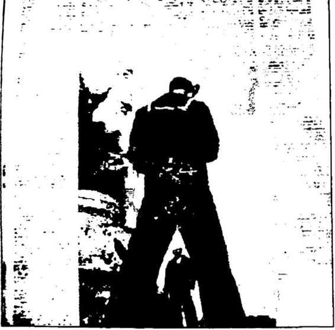 eleştiriden çok Hıristiyanlığa eleştiri vardır. Necip Fazıl ise bırakın Hıristiyan ABD’yi eleş tirmeyi, “ Amerikan politikasını korumakla mükellefiz,” diye yazmıştır. Necip Fazıl, 17 Tem muz 1959 tarihli Büyük Doğu’ da “Amerika, Dünya ve Biz” adlı başmakalesinde aynen şöy le demiştir:
Necip Fazıl’ın Büyük Doğu’daki “Amerika, Dünya ve Biz” başlıklı yazısı. Yazıda iki yana açık bacaklarıyla bir Amerikan bahriyelisinin fotoğrafına yer verilmiştir.
“Biz Amerikan politikası nı korumakla mükellefiz. Ame rikan siyasetini tutmak biricik yol... Amerika’dan nazlı bir sevgili muamelesi görmek bi ricik dikkatimiz olmalı. Yoksa bir Amerikan bahriyelisinin iki yana açık bacakları arasında mütalaa ettiği kadından öteye geçemeyiz. Dış siyasetimizde Amerikan siyaseti ve iç bünye mizde Amerikan politikasını kendimize tecezzi etmez (birbirinden ay rılmaz) bir siyaset vahidine (bütünlüğüne) ayarlamakta büyük ve her işe hâkim bir mana gizlidir.”
Müslümana Müslüman propagandası yapan Necip Fazıl, Hıris tiyan emperyalizmine boyun eğen DP’nin dümen suyuna girmiştir Yayınlarıyla ABD’nin Türkiye’de iyice egemenlik kurmasına ve sadeo
Türkiye’yi değil bütün İslam dünyasını ABD etkisine sokacak Haçlı projelerine önayak olmuştur. İyi de bu nasıl Müslümanlıktır?
Gerçek şu ki Türkiye’de 1946’dan sonra ABD etkisindeki Si yasal İslamcı ve bölücü Kürtçü hareketin fikir babası Necip Fazıl Kısakürek’tir. Evet, bu anlamda Necip Fazıl gerçekten de bir üstattır! 0 şiirin üstadı olmak dışında iç içe geçmiş biçimde birer Amerikan politikası olan Siyasal İslamcılık ile Kürtçülüğün de üstadıdır!
İşin tuhaf yanı, bu ülkede, ömrünü Atatürk’e ve onun kurduğu Cıımhuriyet’e saldırmakla geçiren İslamcı Necip Fazıl Kısakürek “mil liyetçi”, “vatansever” ilan edilirken; Kuvayı Milliye Destanı adlı şii rinde Kurtuluş Savaşı’na ve Atatürk’e övgüler dizen komünist Nazım Hikmet “Türkiye düşmanı”, “vatan haini” ilan edilmiştir. İşte asıl bu çarpıklıkla yüzleşmek gerekir.
R. Tayyip Erdoğan Üzerindeki Necip Fazıl Etkisi 1946’dan bugüne tüm İslamcı Türk sağını derinden etkileyen Ne cip Fazıl Kısakürek’in R. Tayyip Erdoğan’ı etkilememesi olanaksız dır. Erdoğan, Necip Fazıl’ın fikirleriyle imamhatip yıllarında, Necip FazıPın kendisiyle ise Milli Türk Talebe Birliği üyesiyken tanışmıştır.
Necip Fazıl’ın Sakarya adlı şiirini çok seven R. Tayyip Erdoğan, imamhatip gecelerinde arkadaşlarına bu şiiri çok okumuştur. Hatta 1973 yılında Tercüman gazetesinin düzenlediği en iyi şiir okuma yarış masında birinci seçilmiştir.
Necip Fazıl, Milli Türk Talebe Birliği’nin 25 Nisan 1975’te dü zenlediği “Milli Gençlik Gecesi”nde yaptığı “Gençliğe Hitabe” adlı konuşmasında, Türk tarihini dört dönemde incelemiş ve Cumhuriyet dönemini “İşgal ordularının bile yapamayacağı bir cinayetle, madde planında kurtarıldıktan sonra ebedi helake mahkûm” kılan bir rejim olarak tanımlamıştır. Bu toplantıya Necmettin Erbakan, Abdullah Gül ve R. Tayyip Erdoğan da katılmıştır. Toplantıda Erdoğan, şairin Sakarya’nın Destanı başlıklı şiirini okumuştur.
R. Tayyip Erdoğan, Necip Fazıl Kısakürek ile tanışmasını şöyle anlatmıştır:
**Onunla en önemli hatıramız şu: Allah rahmet eylesin, o zaman Milli Türk Talebe Birliği olarak üstada bir jübile gecesi yapacağız. Ve bu jübile gecesi ile ilgili o gece kim takdimini yapacak? Sakarya ve Zindandan Mehmet'e Mektup'u kimler okuyacakf O zaman bir arkadaşımız daha vardı. O da, şiir güzel okuyan ar kadaşlardan biriydi. Milli Türk Talebe Birliğinin o büyük salonunda Genel Başkammız Rüştü Ecevit ile birlikte oturdular. Biz de o arkadaş la hazırlıklarımızı yaptık. Üstadımızın takdimini yapacağız.
Ben o zaman Talebe Birliği’nde kültür müdürüydüm. Arkadaşa dedim, ‘Önce sen hazırlığını takdim eti A4 sayfasıyla dört sayfalık takdim hazırlamış, ikinci sayfanın sonuna gelmişti ki, üstadın mimik leri falan birbirine karıştı. Böyle doğruldu, ayağa kalktı. ‘Sen,’ dedi, adamın belini getirirsin belini. ’ O arkadaşıma öyle değince ben kızar dım, bozardım. Ben o kıvraklığı o anda kavrayamadım tabii. Daha sonradan düşündük ki o kadar övmeye karşı adam dayanamaz.
Benim de avuç içi kadar, öğrenciyken kitap özetlerini çıkarmak için kullandığımız kâğıtlardan iki fişe hazırladığım takdimim vardı. İşte ‘Bizi dört kıtaya yedi iklime hâkim kılan ruhun mimarı... Üstat Necip Fazıl vs...
‘Bu genç takdimi yapsın,’ dedi. Ve takdimi bize verdi. Ondan son ra sıra geldi şiirlere. Şimdi şiirde de arkadaş Sakarya’yı okudu. Zin dandan Mehmet’e Mektup’a gelince manayla uygun düşmeyen bir ses ayarlaması içindeydi arkadaşımız. Tabii o manayla uygun düşmeyen tempoyu tutunca Üstat Necip Fazıl orada da, ‘Şiirimin ırzına geçtin,’ dedi.
Zindandan Mehmet’e Mektup’u ben okudum; onu bana verdi. Sakarya’yı da o arkadaşımıza verdi. Ve böylece jübilesini yapmıştık. Bu, üstatla olan bir hatıramızdı.”
R. Tayyip Erdoğan yıllar sonra başbakan olunca 19 Haziran 2004 tarihinde, “Doğumunun Yüzüncü Yılında Necip Fazıl” gecesinde Ne cip Fazıl’ın Zindandan Mehmet’e Mektup adlı şiirini okumuştur. Şiiri dinleyen eşi Emine Erdoğan gözyaşlarını tutamamıştır. Erdoğan ko nuşmasında, “Kısakürek’in kendilerine bugünkü ufuklarını verdiğini,” belirterek, “ Üstadın o düşünce iklimindeki anlayışı geleceğe taşımaya vesile olabilirsek ne mutlu,” demiştir.
R. Tayyip Erdoğan, 1994 yılında belediye seçimlerini kazandığın da Şehir Tiyatrolarında artık Necip FazıPın oyunlarının sahneleneceği ni söylemiş, başbakan olduktan sonra bu söylemini eyleme dönüştür müştür. Bu doğrultuda 20022003 sezonunda Necip Fazıl’ın Bir Adam Yaratmak ve Para adlı oyunlarının seyirci karşısına çıkacağı duyurul muştur.
R. Tayyip Erdoğan başbakan olmadan önce de başbakan olduk tan sonra da “üstat” dediği İslamcı şair Necip Fazıl Kısakürek’ten çok etkilendiğini birçok defa bizzat ifade etmiştir. Atatürk’ün fikir babası nasıl ki Ziya Gökalp ise, Erdoğan’ın fikir babası da Necip Fazıl’dır, dersek abartmış olmayız doğrusu.
Peki, ama bu etkileşim ne düzeyde kalmıştır? Erdoğan’ın, Necip Fazıl’ın İslamcı görüşlerini ve bu görüşün birebir yansıması olan tarih tezlerini benimsemiş olması dışında, İBDAC ve İslam’ı Büyük Doğu oluşumlarıyla ilişkisi ne düzeydedir? Aslına bakılacak olursa bu so runun yanıtını yine bir vesileyle R. Tayyip Erdoğan bizzat vermiştir. Erdoğan 2004 yılında, “1980 öncesi kadın eli sıkmanın günah olduğu na inanırdık. Eskiden Taliban gibiydik. İslam devleti haline gelecekti ve toplum bu devlet eliyle zorla Müslümanlaştırılacaktı. Laiklik din sizlikti. Demokrasi bir küfür rejimiydi, ” diye bir özeleştiride bulunan eski danışmanı Mehmet Metiner’i doğrulayarak, “Geçmişte İslamiyet'i istismar ettik,” demiştir. Bunun üzerine Mehmet Metiner de, “Açık yü rekli itiraf. Sözlerimiz aynı,” diyerek Erdoğan’ı doğrulamıştır. Kendi ifadeleriyle, geçmişte bir zamanlar “Taliban gibi”, “İslamiyeti istismar eden” Mehmet Metiner ve R. Tayyip Erdoğan’ın fikir kaynaklarının başında Necip Fazıl Kısakiirek gelmektedir. Ve ne garip tesadüftür ki bu iki isim bugün (2013 yılında) AKP içinde yine yan yana siyasete devam etmektedir. Umalım gerçekten değişmiş olsunlar!
2003 yılında, CHP’li Ali Topuz, Başbakan Erdoğan’ın İBDA C’nin ilk yöneticilerinden biri olduğunu söylemiştir. Erdoğan’ın, “De mokrasi bir araçtır. Müslümanın laik olması mümkün değildir. Hedefe ulaşmak için gerekirse papaz elbisesi giyerim,” sözlerini anımsatan To puz şunları söylemiştir: “İslami Büyük Doğu Hareketi Necip FazıPın düşüncelerini yansıtıyordu. Akıncılar Birliği de 1980 öncesinin MSP Gençlik Kollarının kurduğu dernektir. Bu ikisi birleşip İBDAC'yi oluşturdu. R. Tayyip Erdoğan, İBDAC sanıklarını belediyede işe aldı. El Kaide yöneticilerinden birinin önünde diz çöküp nasihat aldıBu sözleri üzerine AKP’li yöneticilerden tepki alan Topuz, bu sefer de şu açıklamayı yapmıştır: “O yıllarda yasal bir örgütlenme olan Akıncı lar Cemiyetinin üyeleri daha sonra İBDAC örgütlenmesi içinde yer aldı. Belirtilen ifadelerim Erdoğan’ın yasadışı örgütün yöneticisi de ğil. ancak bu örgütün tabanını oluşturan 1980 öncesinin Akıncılar Cemiyetinin yöneticilerine işaret etmek üzere kullanılmıştır.”
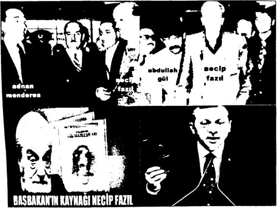 Adnan Menderes, Abdullah Gül ve R. Tayyip Erdoğan... Hepsinin fikir babası Necip Fazıl Kısakürek Başbakan R. Tayyip Erdoğan’ın “üstat” sevgisi bitip tükenmek bitmemiştir. Örneğin Erdoğan, 2011 Şubat ayında AKP Gençlik Teşkilatı’nda üstadın Gençliğe Hitabesi’nden, “Dininin, dilinin, bey ninin, ilminin, ırzının, evinin, kininin, kalbinin davacısı bir gençlik” isteyen satırlarım okumuştur. Erdoğan 2 Kasım 2012 tarihinde yapılan partisinin geleneksel Kızılcahamam toplantısındaki konuşmasını da aynı hitabenin, “ Yarın elbet bizim, elbet bizimdir! Gün doğmuş, gün batmış, ebed bizimdir,” mısralarıyla bitirmiştir.
Erdoğan, 28 Mayıs 2013 tarihli grup konuşmasında Necip Fazıl’dan şöyle söz etmiştir: “26 Mayıs 1983’te büyük mütefekkir ak siyon insanı Üstat Necip Fazıl’ı hakka uğurladık. Nesillere istikamet çizmekle geçen ömründe sadece teoriyle meşgul olmamış, eğilmeden bükülmeden hayatını da bir miras olarak bize devretti. Zor zamanlar da, zor şartlarda yaşadı. Tehditlere, hapiste geçen bir ömre rağmen hak bildiği yoldan geri dönmedi. Bize rehber oldu, yolumuza ışık tuttu... Kendisiyle tanışma fırsatı da bulduğum Üstat Necip Fazıl Kısakiirek’i yâd ediyorum, mekânı cennet olsun. Allah ondan razı olsun...”*Başbakan üzerindeki derin Necip Fazıl etkisinin son işareti, 31 Mayıs 2013 tarihinde başlayan Gezi Parkı eylemleri sırasında ortaya çıkmıştır. İktidarın Taksim Gezi Parkı’na 1940’larda dikilen ağaçları keserek Gezi Parkı yerine TOPÇU KIŞLASI görünümünde bir AVM yapmak istemesi üzerine başlayan Gezi Parkı eylemlerine çok sinirle nen Başbakan R. Tayyip Erdoğan’ın, eylemciler için kullandığı “Birkaç Çapulcu!” ifadesi Necip Fazıl kaynaklıdır.
Şöyle ki: Necip Fazıl, Erdoğan’ı derinden etkileyen Son Dev rin Din Mazlumları adlı kitabında, 31 Mart Olayı’nı bastırmak için Selanik’ten İstanbul’a gelen ve isyanı bastırıp II. Abdülhamid’i tahttan indiren Hareket Ordusu’na “çapulcu” demiştir. Necip Fazıl, ilk bası mı 1969’da yapılan Son Devrin Din Mazlumları adlı kitabının “Maz lum Padişah” adlı 1. bölümünde “Ulu Hakan” diye adlandırdığı II. Abdülhamid’in tahttan indirilmesiyle sonuçlanan 1909 yılındaki 31 Mart İsyanı’m anlatırken, isyanı bastırmak için Selanik’ten İstanbul’a gelen Hareket Ordusu’nun isyancılarla çatışmaya girdiği yerlerden bi rinin de Taksim’deki Topçu Kışlası olduğunu belirtmiştir. Necip Fazıl, “Birkaç komitacı elindeki bir şuursuz sürü” diye adlandırdığı Hareket Ordusu’nun İstanbul’a girişini, o sırada Sadrazam Tevfik Paşa’nın Ber lin’deki oğullarına kâtiplik eden Ali Şevki Bey’in Tevfik Paşa’nın oğ luna yazdığı uzun bir mektuptan bazı alıntılar yaparak anlatmıştır.
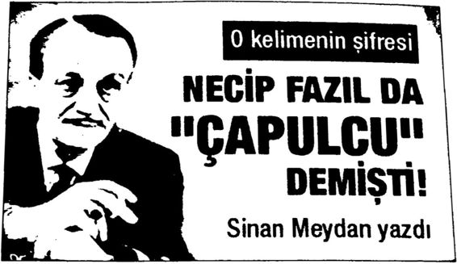 Başbakan Erdoğan’ın Gezi eylemcilerine “çapulcu” demesi üzerine odatv’de bir yazı kaleme almıştım. (S. MJ Necip Fazıl, aynı kitabında 31 Mart İsyanı’nda bir taraftan 11. Abdülhamid’in yalnızlığını, soğukkanlılığını, kardeşi kardeşe kırdır mak istemediğini anlatarak padişahı överken, diğer taraftan bu isyanı bastırmak için Selanik’ten gelen Hareket Ordusu’nu “Makedonya kay naklı çapulcu sürüsü... ” diye yermiştir. Bilindiği gibi Mustafa Kemal de Hareket Ordusu’nun içindedir. Kurmay Başkanı Mustafa Kemal, 31 Mart İsyanı’nı bastıran Hareket Ordusu’nun harekât planım hazır lamış, orduyu sevk ve idare etmiş ve isyan sonrasında Hüseyin Hüsnü Paşa adına bir bildiri kaleme almıştır. Sadi Borak’ın dediği gibi, “İs yanı bastıran Mustafa Kemal olmasına karşın Mahmut Şevket Paşa bir anlamda hazıra konmuştur.” Hareket Ordusu denilince ilk akla gelenlerden biri, hatta birincisi Mustafa Kemal olduğuna göre Necip Fazıl’ın tanımlamasına göreo da ÇAPULCULARDAN biridir!
Sokakta mütemadiyen mavzer kurşunlan yağıyor ve hatta bizim bahçeye bile düşüyordu. Annen şaşılacak bir soğukkanlılıkla bana dedi ki: ‘Bu top güllelerinin kışlalan yıkacaklan muhakkaktır, ama içlerinde kaynaşan kelleleri öldürüp ortalığı temizleyeceği de şüphesizdir.’ (...) Kışlalarında teslim olmadıklarına pişman olan asi askerler affedilmelerini temin edecek bir çare arıyorlardı. Ben kendilerine bir nutuk irad edip hepsini etrafıma topladıktan sonra, bombardıman edilen kışlalarına götür mek ve sibhbrını teslim ettirip affolunmalarını temin etmek üzere sokağa çıktım. (...) Kurşun sesleri de, bombardıman da ikindiye doğru nihayet buldu. Çünkü artık bütün kışblar (Topçu Kışlası da dahil) teslim olmuştu. Yalnız Taşkışla akşama kadaı mukavemete devam etti.” Kısakürek, Son Devrin Din Mazlumlan, s. 2123.
Ve Başbakan Erdoğan, Taksim Gezi Parkı’m yıkıp Topçu Kışla sı görünümünde AVM yapılmasına karşı yürüyenlere (ister istemez bilinçaltınının da etkisiyle, üstadı Necip Fazıl’m, 1909’da Selanik’ten gelerek Taksim Topçu Kışlası ve civarında isyancılarca çatışan Hare ket Ordusu’na dediği gibi) ÇAPULCU demiştir. Tabii “Taksim Toçu Kışlası” ve “çapulcu” sözcüğü arasındaki bu ilişki, hem Necip Fazıl’ın hem de Başbakan R. Tayyip Erdoğan’ın aynı mekânlarda farklı za manlarda meydana gelen iki farklı olay karşısındaki birbirinden ta mamen bağımsız ortak tepkileri olarak da değerlendirilebilir. Belki bu değerlendirme daha akla yatkın da gelebilir. Başbakan Erdoğan, Gezi eylemcilerine "çapulcu” diye seslenirken evet, Necip Fazıl’ın Taksim Kışlası konusunda yazdıklarını ve onun da “çapulcu” sözcüğünü kul landığım aklının ucundan bile geçirmemiş olabilir. Her ne şekilde olur sa olsun sonuç olarak gerçek şu ki: Necip Fazıl için Topçu Kışlası’nı yıkmaya çalışanlar “çapulcudur”. R. Tayyip Erdoğan için ise o Topçu Kışlası’nın yeniden yapılmasına direnenler “çapulcudur”.
Gerçek şu ki, bugün Türkiye Necip Fazıl’ın rahlei tedrisinden ge çen, onun fikirleriyle beslenen, onun ideolojisini içselleştirmiş, onun şiirlerini ezbere bilen bir kuşak tarafından yönetilmektedir. Necip Fazıl bugün başta Başbakan R. Tayyip Erdoğan olmak üzere Türkiye’yi yö netenlerin kutsal ve dokunulmaz üstadıdır.
Necip Fazıl’ın Tarihçiliği Necip Fazıl’ın şairliği su götürmez. O gerçekten de şiirin üstadıdır. Ancak aynı Necip Fazıl’ın tarihçiliği bir o kadar kötüdür. O tarihin tahrifatçısıdır. Daha sonra ayrıntılarıyla ortaya koyacağım gibi o tarihi adeta tersyüz ederek yalanı gerçek, gerçeği yalan göstermiştir. Özel likle 1950 ve sonrasında tamamen Siyasal İslamcılığa hizmet edecek şekilde kurgusal tarih tezleri geliştirmiş, söz ustalığıyla ve dinle süsledi ği bu tezleri “gerçek” diye kamuoyunun önüne koymuştur. 1949’dan itibaren ABD etkisiyle Türk Tarih Tezi’nin tasfiye edilip yerine Türk İslam Sentezi’nin yerleştirilmeye çalışıldığı süreçte Necip Fazıl ve onun Büyük Doğu dergisi gerçekten de çok önemli bir işlev görmüştür. Ni tekim Necip Fazıl bu işleve uygun olarak dergisini, 1950195 l’de rejim düşmanı Türkİslamcı yazarlarla doldurmuştur. Örneğin Türk ırkçısı Nihal Arsız, Cevat Rıfat Atilhan ve Rıza Nur, sosyalist Arif Oruç, Nur cu Saidi Nursî bu isimlerden birkaçıdır.
Necip Fazıl önce Büyük Doğu dergisinde, sonra da kitaplarında ileri sürdüğü yakın tarih tezleriyle erken Cumhuriyet dönemini, bu dönemin en önemli aktörlerinden Atatürk ve İnönü’yü eleştirmekle kalmamış, insafsızca karalamıştır. Rejimi ahlaksız, dinsiz, acımasız, baskıcı diye adlandırıp bu doğrultuda neredeyse hiçbir somut belge ve bilgiye dayanmayan tarih tezleri kurmuştur. “Ondan işittim, bundan duydum, hatta rüyamda gördüm!” diye başlayan tarih tezlerini bolca gözvaşıyla ıslatıp biraz da şiirle ve dinle soslayınca ortaya gerçekten de tadından yenmez “mazlum hikâyeleri”, “sahte kahramanlık öyküleri” çıkmıştır. Evet, gerçekten de bunlar başı sonu belli iyi hikâyelerdir, ama o kadar! Bunlara tarih demek olanaksızdır. Çünkü tarih belgeyle vapılır. Ancak Necip FazıPın yazılarında ve kitaplarında bolca bilgi ve yorum vardır, ama aynı bollukta belge yoktur.
Karşı Devrimci; Amerikancı, Siyasal İslamcı, Atatürk ve Cum huriyet düşmanı kuşakların bence en büyük talihsizliği, ideolojilerini besleyen tarihsel arka planın Necip Fazıl’ın “kurgusal tarih tezlerine” dayanıyor olmasıdır. İleride görüleceği gibi bu temelsiz, kurmaca tezleri yıkmak hiç de zor değildir.
Necip Fazıl’ın tarih tezlerini iki döneme ayırarak incelemek ge rekir. Birinci dönem 19231946 arası dönem. İkinci dönem 1946 ve sonrasındaki dönem. Necip Fazıl birinci döneminde rejimin en ateşli savunucularından biri olarak Atatürk’e övgüler dizen, softalığa ve yo bazlığa karşı tarih tezlerini savunurken; ikinci döneminde rejimin en ateşli muhaliflerinden biri olarak Atatürk’ü yeren, genç Cumhuriyet’i ahlaksızlıkla ve dinsizlikle suçlayan tarih tezlerini savunmuştur. Yani çok kısa bir sürede 360 derece dönmüştür.
Örneğin Aralık 1930’da meydana gelen Menemen Olayı’ndan sonra Ankara Türkocağı’nda Kubilay’ı anma toplantısında yaptığı konuşmada şöyle demiştir:"... Gözüme görünen şeyi açıkça, kaidesiz, tertipsiz ve imansız söylüyorum. Eğer zayıf tutarsan, eğer inkılâbın yü reğini, hassasiyetini ve sinirlerini temsil etmezsen, bıçağın ters tarafı ile yirmi dakikada kesilen Kubılay’ın kafasında sana tevcih edilen akıbeti seyredebilirsin... Türkiye’nin nüfus kütüğündeki softa ve mürtecilerin yeşil kanını kurutacaksın; bu kadar...”
Aynı Necip Fazıl 1969 yılında basılan Son Devrin Din Mazlumları adlı kitabında Menemen Olayı’nın “tertip” olduğunu yazmıştır: “Evet; biitiin şahsiyetli Müslümanları, bilhassa Nakşibendi tarikatı büyükle rini ortadan kaldırmak için hükümetçe düzenlenen Menemen Vakası tertiplerin en vicdansızını teşkil eder. Sebep tek olarak din giidücüleri nin imhası ve halkın yıldırılması...”
Necip Fazıl, 27 Ocak 1950 tarihli Büyük Doğu’da “Doğu Faciası” adlı bir yazı dizisine başlamıştır. Bu yazı dizisinde 19371938 yılların daki Dersim Harekâtı’nda 50.000 “Saf ve masum Müslümanın, çocuk, genç, ihtiyar, kız, kadın, hasta, alil, ısırgan otu gibi doğranması”ndan söz etmiştir. Dergisinin 17 Şubat 1950 tarihli nüshasında bu sefer, Menemen Fatihi lakaplı Mustafa Muğlalı Paşa’nın 1943 VanÖzalp’te icra ettiği “33 Kurşun 01ayı”nı eleştirmiştir. Ancak Necip Fazıl’ın “Dersim katliamı” tezinin, bazı tanıkların anlatımları ve oradan bu radan işittikleri dışında dişe dokunur bir belgesi yoktur. Dahası bu kitabın “Dersim Harekâtı” bölümünde ayrıntılarını anlatacağım gibi Necip Fazıl, Dersim katliamı masalını inandırıcı kılmak için yalan yaz mıştır, açıkça uydurmuştur.
Necip Fazıl, “hidayete ermeden önce” nerdeyse bir Atatürkçüdür! Daha önce de belirttiğim gibi 26 Kasım 1938’de Atatürk’ü şöyle öv müştür: “(...) Benim gözümde birbirine bağlı iki işin sahibi iki Atatürk var. Zaman tasnifinde bunlardan biri düşmanın denize dökülüşüne, öbürü bugüne kadar sürer. (...) Biri ölüm hükmü giymiş bir milleti şahlandırdı. Mucize çapında bir başarıyla madde ve askerlik planında muzaffer kıldırdı. Öbürü, bir atı evvelki ölüm tehlikesini doğuran se bepler âlemine karşı harekete geçti, fikir ve cemiyet planında yeni bir bünye inşasına girişti... ”
Necip Fazıl, 1943’te Büyük Doğu'nun 10. sayısında “Atatürk Di rilecektir" başlıklı yazısında Atatürk’e yine methiyeler dizerek onun bir gün geri geleceğinden söz etmiştir. Ancak aynı Necip Fazıl, 1950’den itibaren yazılarında Atatürk’e hakaret etmeye başlamıştır. Bu nedenle zaman zaman hapis yatmıştır. Örneğin 27 Mayıs 1960 darbesi oldu ğunda DP’nin 1951’de çıkardığı Atatürk’ü Koruma Kanunu’na muha lefetten hapishanededir. 1.5 yıllık cezasını tamamlayıp 18 Aralık 1961 günü hapisten çıkmıştır. Necip Fazıl, 8 Temmuz 1981 tarihinde bir kere daha Atatürk’e hakaretten mahkûm olmuş, bu mahkûmiyet kara rı Yargıtay 9. Ceza Dairesi’nce 17 Şubat 1982 tarihinde onaylanmıştır. Necip Fazıl’m 1950’lerde yeniden Büyük Doğu'yu çıkarmasının asıl amaçlarından biri Cumhuriyet rejimini eleştirmek, hatta kötüle mektir. Doğal olarak geliştirdiği tarih tezleri de bu amaca yöneliktir. Yani Necip Fazıl’ın tarih tezleri daha baştan “belli bir amaca yönelik” olduğundan hiçbir bilimsel temeli ve tarafsız (objektif) niteliği yoktur.
Necip Fazıl, Cumhuriyet eleştirilerinin kendi içinde bir mantığı, bir temeli olması için eleştirilerini direk Cumhuriyet döneminden değil de Meşrutiyet döneminden başlatmıştır. Ona göre II. Meşrutiyet Yahu di ve mason uşağı olan İttihat ve Terakki Cemiyeti’nce yapılmıştır ve “Meşrutiyet devri, (...) fuhuş ağacının ilk turfanda meyvelerini devşirir ve bu işin maddi ve manevi bütün unsurlarını kadrolaştmr.”
Necip Fazıl’ın tarihi gerçekleri çarpıtarak Cumhuriyet ve Atatürk düşmanlığı yapması Saidi Nursî gibi Cumhuriyet ve Atatürk düşman larını çok sevindirmiştir. Örneğin Necip Fazıl, Saidi Nursî ile karşı laşmasında Saidi Nursî’nin kendisine, “Seni Nur Risalesi’ne 40 yıl hizmet etmiş kabul ediyorum," dediğini aktarmıştır.
Cumhuriyet’e kurmaca tarih tezleriyle kin kusan Necip Fazıl, yazılarında ve konuşmalarında takipçilerine, hedefe ulaşabilmek için “ılımlı” olmayı öğütlemiştir. Örneğin laiklik konusundaki öğüdü şöy ledir: Biz ne lâikiz diyoruz ne lâik değiliz diyoruz. Birinden biri, ama söylemiyoruz. Lâiklik, ne iyidir ne kötüdür diyoruz. Dikkat edin onu da söylemiyoruz. Ama diyoruz ki, lâiklik dünya hükmü olan bir din hakkında kabilı tatbik değildir. Evet, sevgili gençler, daima benim gibi konuşmaya çalışın. Çünkü davamız çeşmi bülbül kadar naziktir, yere düşürüp kırmayalım."
Necip Fazıl, Milli Türk Talebe Birliği’nin 25 Nisan 1975’te dü zenlediği “Milli Gençlik Gecesi”nde okuduğu “Gençliğe Hitabe"sinde Cumhuriyet dönemini “İşgal ordularının bile yapamayacağı bir cina yetle, madde planında kurtarıldıktan sonra ebedi helake mahkûm kı lan bir rejim" olarak tanımlamıştır. Bu toplantıya Necmettin Erbakan ve Abdullah Gül ile birlikte katılıp şairin Sakarya’nın Destanı başlıklı şiiri okuyan R. Tayyip Erdoğan’ın yakın tarih tezleri, Necip Fazıl’ın bu sözüyle şekillenmiş gibidir.
Necip Fazıl Kısakürek’in Büyük Doğu’daki yazılarında, Son Dev rin Din Mazlumları, Ulu Hakan II. Abdülhamit Han, Vatan Haini Değil Büyük Vatan Dostu Vahidüddin ve Vesikalar Konuşuyor adlı kitaplarında yer verdiği yakın tarih tezlerinden bazıları şunlardır:
HŞeyh Said isyan etmemiştir, o bir din mazlumudur!
10. Menemen Olayı Nakşibendi tarikatını ortadan kaldırmak için ter tiplenmiştir!
Necip Fazıl Kısakürek, Vatan Haini Değil Büyük Vatan Dostu Sultan Vahdettin adlı kitabı nedeniyle Yargıtay 9. Ceza Dairesi’nin 17 Şubat 1982 günkü kararıyla Atatürk’ün anısına hakaret suçundan ce zalandırılmıştır.
“Herkesin bildiği gibi Necip Fazıl, Atatürk düşmanıdır, Abdül bamitçı'dır. Kısakürek’e bakılırsa Jöntürkler dinsizdir. Hareket Ordu su ki Mustafa Kemal içindeydi bu ordunun‘çapulcu alaylarından' oluşmuştur.
Mustafa Kemal Paşa, Bağımsızlık Savaşı’nda hem emperyalizmin silahlı gücüne hem de Hilafet Ordusu na karşı çarpışmak zorunda kal mış; vatan haini padişah İngiliz gemisine binerek kaçmıştır.
Kısakürek, bu Vahdettin in yanında, Atatürk’ün karşısında yer alır.”
“Mehmet Şevket Eygi denen din tüccarı ‘BUGÜN’ adlı gazetesin de bütün Atatürk düşmanlarım etrafında toplamıştır.
Ne acıdır ki, Necip Fazıl gibi bir Atatürk düşmanı, Mehmet Şevket Eygi ile yaptığı anlaşma sayesinde BUGÜN gazetesinde tam 100 gün şu sözleri küsmüştür:
‘Padişah Vahdettin vatan haini değil vatan dostudur.’
Yani Vahdettin’e ‘yalancı’ diyen Mustafa Kemal Paşa yalancıdır. ‘Vahdettin eğer itmeseydi, Mustafa Kemal Paşa Anadolu’ya geç meyecekti. Zorla gönderilmiştir.’
Atatürk düşmanı Necip Fazıl bu sözleri 100 gün tekrarladı. Türkiye’de kimse karşısına dikilmedi. ”
Necip Fazıl’ın “Atatürk düşmanlığı” 1950’lerde başlamış ve ölünceye kadar devam etmiştir. Örneğin Mart 1959’da Büyük Doğu dergisinde, “Tanzimat’tan beri devam eden sahte inkılâplarımız bu
inkılâpların türettiği sahte kahramanlar, ” diye devam eden yazısında Atatürk’e saldırdığı için gençlik teşkilatları ve CHP tarafından kınan mıştır. Ancak hükümet Necip Fazıl’ı protesto mitingine izin vermemiş tir. 19501960 arasında Menderes döneminde Necip Fazıl’ın Büyük Doğu dergisindeki Atatürk düşmanlığından rahatsız olan üniversite gençliği bu rahatsızlığını Menderes’e gönderdikleri protesto telgrafla rıyla göstermiştir. Örneğin Menderes’e gönderilen 20 Mart 1959 ta rihli bir öğrenci mektubunda, “Sayın Başvekil Adnan Menderes, sayın büyüğümüz, Büyük Doğu mecmuasının Atamıza, Cumhuriyetimize ve inkılâplarımıza dil uzatan neşriyatını protesto etmek gayesi ile miting izni isteyen ve bu hususta beyanat veren (...) Erol Ünal ile Erol Ekmen (...) İstanbul Emniyet Birinci Şube Müdürlüğümde hürriyetleri tehdit olunarak alıkonulmuşlar...” denilerek hem Necip Fazıl hem de onu protesto etmek isteyen öğrencileri tutuklayan emniyet eleştirilmiştir.
İşte R. Tayyip Erdoğan’ın özellikle başbakan olduktan sonra sıkça dile getirdiği “tarih tezleri” aslında Necip Fazıl Kısakürek’in tezleridir. Erdoğan birçok defa tarihi Necip Fazıl’dan öğrendiğini ifade etmiştir. Örneğin 23 Kasım 2011’de Meclis’te yaptığı konuşmada, “Öy/e ki taplar vardır ki hayatınızı değiştirir, okuduğunuz bir satır, nefes alıp verdiğiniz sürece hafızanızdan çıkmaz... Size Necip Fazıl Kısakiirek ’in ‘Son Devrin Din Mazlumları’ isimli kitabım göstermek istiyorum. Ya kın tarihimizin karanlık sayfalarına ışık tutuyor. Resmi tarihin bilin meyenlerini burada gördük. Bu kitap zaman zaman yasaklandı, topla tıldı. Gençlikten uzak tutulmak istendi. İşte benim de kulaktan dolma anlatıların ötesinde Dersim’le tanışmam bu eserle olmuştur...” diye rek tarihi Necip Fazıl’dan özellikle de onun Son Devrin Din Mazlum lan adlı kitabından öğrendiğini belirtmiştir.
Ancak Necip Fazıl Kısakürek’in diğer kitapları gibi bu Son Devrin Din Mazlumları kitabı da hiç de nesnel tarih öğrenilebilecek bir kitap değildir. Birincisi, tarih biliminin belli kuralları, belli yöntemleri vardır. Tarih biliminin en temel yöntemi tarihsel olguların ve olayların belgele re dayalı olmasıdır. Kanıtsız, belgesiz tarih ve tarihçilik olmaz. Ancak Necip Fazıl’ın diğer kitapları gibi Son Devrin Din Mazlumları adlı ki tabında da ilaç niyetinetek bir belge ve bu belgeye atıf yapmak için tek bir dipnot bile yoktur. Dolayısıyla kitabın sonunda kaynakça da yoktur. Eğer Necip Fazıl bu kitabını herhangi bir üniversitenin herhangi bir tarih bölümüne tez olarak sunsa, bilimsel ölçülere göre kesin olarak sınıfta kalırdı. Necip Fazıl söz konusu kitabında birtakım tanıkların an lattıklarına, birtakım duyumlara ve kaynak göstermediği içinnereden öğrendiğini bilmediğimiz birtakım bilgilere dayalı olarak bolca duygu sömürüsü yapmıştır. Bırakın üniversitede tarih okuyan birini, lise düze yinde tarih bilen biri bile bu kitabı eline aldığında bunun nesnel bir tarih kitabı değil, daha çok acıklı bir roman veya dini hikâyeler antolojisi ya da bir kara propaganda kitabı olduğunu çok çabuk görebilir.
Erdoğan’ın, “Yakıtı tarihimizin karanlık sayfalarına ışık tutuyor. Resmi tarihin bilinmeyenlerini orada gördükdiyerek yere göğe sığdı ramadığı kitapta Necip Fazıl şu tezleri ileri sürmüştür: Şeyh Said isyan etmemiştir, o bir din mazlumudur! İskilipli Atıf Hoca şapka devrimi nedeniyle asılmıştır! O da bir din mazlumudur! Menemen Olayı Nak şibendi tarikatını ortadan kaldırmak için tertiplenmiştir! Olay düzme cedir! 19371938 Dersim Harekâtı’nda 50.000 Kürt katledilmiştir! Saidi Nursî kahraman bir din mazlumudur!
Başbakan R. Tayyip Erdoğan’ı derinden etkileyen Son Devrin Din Mazlumları kitabı “üstadın” diğer tarih kitapları gibi Atatürk ve Cum huriyet düşmanlığıyla kaleme alınmış, hiçbir tarihçinin ciddiye alama yacağı kadar niteliksiz ve propagandist bir çalışmadır.
Görülen o ki Erdoğan, Necip Fazıl’ın kurmaca tarih tezlerini Ka dir Mısıroğlu, Mehmet Metiner, Mustafa Armağan gibi Karşı Devrim ci Atatürk ve Cumhuriyet karşıtlarının yazdıklarıyla harmanlayarak “tarihimizle yüzleşmektedir”.
Fesli Tarihçi Kadir Mısıroğlu R. Tayyip Erdoğan’ın “gayri resmi” tarih hocalarından biri de namı diğer fesiyle arzı endam eden Kadir Mısıroğlu’dur. Mısıroğlu, hem Necip Fazıl’ın yarım bıraktığı konularda tarih tezleri geliştirmiş hem de Necip Fazıl’ın tarih tezlerini “tek taraflı”, “seçmece” belgelerle sözüm ona temellendirmeye çalışmıştır.
Kadir Mısıroğlu’nun tarih tezlerine/çarpıtmalarına geçmeden önce kısaca Mısıroğlu’nu tanıyalım. Hemen endişelenmeyin! Onu Necip Fazıl kadar önemsemediğim için bütün hayatını değil de, şu meşhur Cumhuri yet ve Atatürk düşmanlığının köklerini anlatacağım kısaca...
Rıza Nur’un Şifresi Bilenler bilir! Türkiye’de Atatürk düşmanlığının “uyduruk” temel kaynaklarından biri Rıza Nur’un hacimli Hayat ve Hatıratım adlı kita bıdır. Aslında, bakılacak olursa Türkiye’de Necip Fazıl da dahil bü tün Atatürk ve Cumhuriyet düşmanlarının başucu kitabı Rıza Nur’un bu anılarıdır.
Atatürk, 1927 yılında Nutuk’ta Rıza Nur’u, Balkan Savaşları sı rasında vatana ihanetle suçlamış, herkesin vatanı kurtarmaya çalıştığı o günlerde Rıza Nur’un Arnavutları isyan ettirmeye çalıştığını ileri sür müştür. Rıza Nur, 1928 yılında Paris’te Nutuk’u okuyup Atatürk’ün kendisini ihanetle suçladığını görür görmez Hayat ve Hatıratım adlı anılarını yazmaya başlamıştır. Amacı, Nutuk’ta anlatılanları yalan lamak ve kendisini vatan hainliğiyle suçlayan Atatürk’ten “acımasız iftiralarla” intikam almaktır. Amacına da ulaşmıştır!
Söz konusu kitabında yer alan Atatürk hakkındaki iddiaları nın “uydurmaca”, “kurmaca” olduğunu bilen Rıza Nur, kitabını Atatürk’ün sağlığında yayımlama cesareti göstermemiştir. Rıza Nur, 1935 yılında Hayat ve Hatıratım adlı kitabını 1960 yılına kadar ya yımlanmamak üzere İngiltere’deki British Museum’a göndermiştir.Yani “uyanık” Rıza Nur, yalanlarının, palavralarının ortaya çıkma ması için özellikle Atatürk’ün ölmesini beklemiştir.
Rıza Nur, Hayat ve Hatıratım adlı kitabında Atatürk’e, Atatürk’ün annesine, babasına ve başta İsmet Paşa olmak üzerine çevresinde ki kişilere ağzını geleni söylemiştir. Kitabını Atatürk’e yönelik deli saçması, hatta komik iddialarla doldurmuştur. Ayrıca kendisinin de homoseksüel ve kısmen deli olduğunu itiraf etmiştir. Kitabı inceleyen ruh doktorları, “kitabın yazarında bir koğuş hastaya yetecek kadar hastalık olduğunu” belirlemişlerdir.
İşte bu Rıza Nur’un, 1960’larda yayımlanması için British Museum’a emanet ettiği Hayat ve Hatıratım kitabı filmlere taş çıkar tan bir öykü sonunda Kadir Mısıroğlu’nun eline geçmiştir! Tesadüfe bakın ki bir Atatürk düşmanının yazdığı kitap yıllar sonra başka bir Atatürk düşmanın eline geçiyor!
Kadir Mısıroğlu, Rıza Nıır’un Hayat ve Hatıratım’mı 19671968 yıllarında 4 cilt olarak yayımlamıştır.
Peki, ama bu hatırat nasıl olmuş da azılı bir Atatürk ve Cumhuri yet düşmanı olan Kadir Mısıroğlu’nun eline geçmiştir. Bundan sonrası nı değerli gazeteci, yazar Muharrem Bayraktar’dan dinleyelim:
“Tarihçi Kadir Mıstroğlu’na şöhret yolunu açan çalışması. Rıza Nur tarafından yazılan ve Atatürk’e ağır hakaretlerin yer aldığı ‘Hatı ratım’ kitabını yayımlamasıdır. Bu kitap Mısıroğlu’na büyük paralar kazandırmış, kendi ifadesiyle T 968 şartlarında büyük bir servet olan 500.000 lira kazanç elde etmiştir.’ Peki, Rıza Nur bu kitabı ne zaman yazdı ve Kadir Mısıroğlu kitaba nasıl ulaştı?
Rıza Nur, hatıralarını kaleme aldığı kitabı 1935 yılında Londra’da bulunan British Museum’a ‘1960 yılına kadar yayımlanmamak kaydıy la’ verir. Kitap 25 yıl boyunca yayımlanmayacaktır. 1960 yılından son ra da kitabı yayımlamaya kimse cesaret edemez. Çünkü yayımlanması halinde ‘Atatürk’e büyük iftiralar atan ve tarihsel olaylar ve gerçeklerle bağdaşmayan bu kitabın’ büyük sonuçlar doğuracağı aşikârdır.
Bunun için bir ‘deli kanlı!’ lazımdır ve bulunur. (Kadir Mısıroğlu kendi kişisel sitesinde Bakırköy Akıl ve Ruh Hastanesi’nde ve Cerrah paşa Psikiyatri Kliniği’nde yattığını anlatır). Kadir Mısıroğlu kendi ifa desiyle şöyle anlatır:
‘1968 senesinde Cağaloğlu’ndaki Vilâyet Han’ın ahbabım olan sahibinin teşvikiyle Beyaz Saray’ı (işhanı) terk edip Cağaloğlu’na yer leştim. Burada diğer eserlerimi telif ederken elime Rıza Nur’un British Museum’a koyduğu hatıralarının mikrofilmi geçti. Onu hayali ‘Altın dağ Yayınevi’ adıyla yayımladım.’
Ne kadar basit değil mi?
Rıza Nur'un İngiltere'de olan hatıratının mikrofilmi bir anda Ka dir Mısıroğlu’nun eline geçmiş ve o da ‘yayımlayıvereyim bari’ demiş!’
E tabii, biz de inandık!
Rıza Nur’un British Museum’a gönderdiği hatıratının mikrofilmi nin Türkiye’de olmadığı, tek nüshasının Londra’daki merkezde olduğu biliniyor.
Peki, bu kitabın mikrofilmini kim ya da kimler İngiltere’den alıp Kadir Bey’e teslim etti? Ya da Kadir Bey ‘Londra’daki bir kitabı’ nasıl ele geçirdi?
Kadir Mısıroğlu’nun İngiltere ile olan ilgisi daha sonraki yıllarda da devam edecektir. Mısıroğlu, mahkemeleri dolayısıyla Türkiye’den ayrılmasını şöyle anlatır:
‘Böylece vatanı azizimden ayrıldığım zaman, arkada otuzdan faz la ağır cezalık dava bırakmış durumdaydım. Bilahare çoluk çocuğumu yanıma getirttim. Almanların benden gayrisine oturma müsaadesi ver memesi üzerine, hep birlikte İngiltere’ye geçtik.’
Almanya’nın kabul etmediği Kadir Mısıroğlu’nu İngiltere bağrına basıyor.
Kadir Mısıroğlu, son yıllarda İngiliz emperyalizminin Ortadoğu’yu işgal planlarını ‘diktatör rejimler devriliyor!’ bahanesiyle adeta alkış lamaktadır.
Küffarın bu işgal planları karşısında sesi çıkmayan ve ‘diktatör rejimler devriliyor,’ diye sevinen Mısıroğlu diğer taraftan, ‘Şia'nın İslam’a verdiği zarar Hıristiyanlardan daha çok olmuştur,’ diyerek bir tarih cehaleti sergilemeye devam etmektedir.
Müslüman Şiilere hakaret edip Hıristiyan İngilizlere karşı ağzını açmayan Kadir Mısıroğlu ‘hemşehrimi’ tanımaya çalışıyorum.
Acaba Rıza Nur’un kitabını İngilizlerden nasıl alıp yayımladı?
Acaba neden İngiltere’ye sığındı ?
Acaba neden İngilizlerin İslam ülkelerindeki kıyımına paşa paşa tepki vermiyor? (Mısıroğlu’nun Akçaabat Diirbinar Mahallesi’ndeki lakabı Kadir Paşa’dır! Ben de aynı mahallede 3 yıl oturdum.)
Acaba İngiliz destekli Yunan gâvurunu denize döken Mustafa Ke mal Paşa, ‘Batı emperyalizmi ve yayılmacılığı hakkında’ yüzlerce kez beyanda bulunurken ‘Kadir Paşa’ neden susmaktadır? Bu paşa kimin paşasıdır?”
Bu Tarih 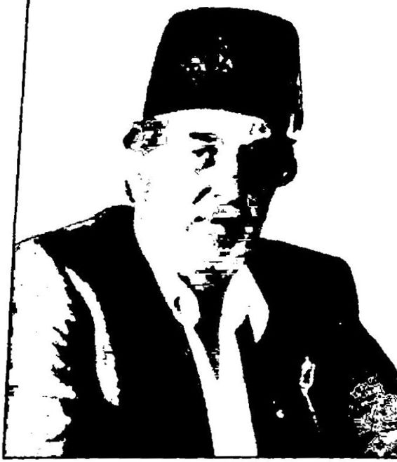 Yeniden Yazılacak, Bir Millet llanihaye Aldatılamazl Tarihçi Yazar Şair Hukukçu Üstad Kadir Mısıroğlu Atatürk ve Cumhuriyet karşrt, bîr sitede Kadir Mısıroğlu "b öyle tanıtılmaktadır.
Rıza Nur’un Hayat ve Hatıratımadi, kurmaca anılarının öyküsü burada bitmemiştir. Hayat ve Hatıratım’ı 19671978’de azılı bir Ata türk düşmanı olan Kadir Mısıroğlu yayımlarken, aynı kitabı 1992’de bu sefer başka bir azılı Atatürk düşmanı Abdurrahman Dilipak yayım lamıştır. Görülen o ki, Türkiye’de Atatürk ve Cumhuriyet düşman lığını körüklemek için Rıza Nur’un deli saçması anıları ısıtılıp ısıtılıp servis edilmiştir.
Kadir Mısıroğlu, Rıza Nur’un Hayat ve Hatıratım adlı anıları dı şında, Sarıklı Mücahitler, Lozan Zafer mi Hezimet mi, Osmanoğulla rmm Dramı, Geçmişi ve Geleceği İle Hilafet adlı kitaplarında ve kon feranslarında Atatürk’e ve Cumhuriyet’e saldırmış, belgelere maharetle takla attırarak geliştirdiği tarih tezlerini bolca din sosuna batırarak ka muoyunun önüne koymuştur.
Kadir Mısıroğlu’nun belli başlı yakın tarih tezlerinden/palavrala rından bazıları şunlardır:
Kadir Mısıroğlu’nın sınırsız hayal gücünün ürünü olan daha on larca yakın tarih tezi/yalanı vardır. R. Tayyip Erdoğan’ın “gayri resmi”t arih hocalarından biri de işte bu “tahrifatçı” Kadir Mısıroğlu’dur.
“Akil” Tarihçi Mustafa Armağan Ona, “Cemaatin Çakma Tarihçisi” diyorlar, ama sanırım yanılmış lar! Baksanıza binlerinin “çakma tarihçi” dediği Mustafa Armağan’ı, Başbakan R. Tayyip Erdoğan, 2013 yılındaki açılım sürecinde “akil in san” ilan ediverdi.
FethuIIah Gülen’in Zaman gazetesinde yazan, kitapları İslamcı Timaş Yayınlarından çıkan, FethuIIah Gülen’e ve Başbakan R. Tayyip Erdoğan’a yakın “yandaş televizyonlarda” tarih programları yapan Mustafa Armağan kimdir? Öyle ya Başbakan tarafından “akil insan” seçildiğine göre işinin ehli olmalı! Resmi web sitesindeki bilgiye göre Mustafa Armağan, İstanbul Üniversitesi Edebiyat Fakültesi Türk Dili ve Edebiyatı bölümünden mezun olduktan sonra çeşitli yayınevlerinde editör olarak çalışmış, 19951996 arasında İzlenim dergisinin, 20002002 arasında da Diya log Avrasya dergisinin yayın yönetmenliklerini yürütmüş, halen serbest yazar olarak çalışan biridir. Yani tarih öğrenimi görmemiştir, dolayı sıyla aslında bir tarihçi değildir.
Ayrıca Mustafa Armağan’ın, Tayyip Erdoğan’ın İstanbul belediye başkanlığı döneminde Belediye’nin Kültür Dairesi’nde çalıştığına iliş kin iddialar vardır.
Armağan, 3 Nisan 2013 tarihinde AKP hükümeti tarafından açık lanan ve barış sürecini yönetecek olan 63 kişilik Akil İnsanlar Heyeti’ne Marmara Bölgesi Temsilcisi olarak seçilmiştir.
Görülen o ki, Mustafa Armağan, Atatürk ve Cumhuriyet düşman lığıyla geliştirdiği tarih tezlerinin halka rahat bir şekilde ulaştırabilmesi için gizli açık hem Gülen Cemaati hem de AKP hükümeti tarafından desteklenmektedir.
Armağan, Fethullah Gülen’in Zaman gazetesinde yazması, Gülen’e ve AKP’ye yakın televizyonlarda boy göstermesi dışında 2012 yılında çıkmaya başlayan Derin Tarih adlı derginin de genel yayın yönetmenli ğini yapmaktadır. Armağan’ın başında bulunduğu dergi AKP desteğiyle yayın hayatına başlamıştır.
Basına yansıdığı kadarıyla: “Albayrak Holding Medya Grubu bünyesinde tarihçi Mustafa Armağan’ın yönetmenliğinde yayın hayatı na başlayan Derin Tarih dergisinin tanıtım toplantısı TBMM Milli Sa raylar Saray Koleksiyonları Sergi Salonunda yapıldı. Toplantıya Baş bakan Yardımcısı Bülent Arınç’ın yanı sıra Albayrak Holding Yönetim Kurulu Başkanı Ahmet Albayrak, Yönetim Kurulu üyeleri Nuri Al bayrak, Kâzım Albayrak, Mesut Albayrak, Albayrak Grubu CEO’su Ömer Bolat, derginin Genel Yayın Yönetmeni Mustafa Armağan, Os manlı sultanlarından Abdulmecit’in torunu Arzu Enver Eroğan ve da vetliler katıldı.
Toplantıda konuşan Başbakan Yardımcısı Bülent Arınç, tarih hakkında doğru bilgi edinmenin ekmek kadar, su kadar ihtiyaç oldu ğunu söyledi. Resmi tarih söyleminin dışında aslında bir de gerçek ta rih bulunduğunu aktaran Arınç, ‘Zaten isim manidar, ‘Derin Tarih’. Biz daha çok ‘derin devlet’ diye bir şey duyduk. Derin Tarih’i de şimdi
duyuyoruz. Demek ki bir devlet var, bir de derinde olan vardı. Şin bir de tarih var, herkesin bildiğini, okuduğunu söylediği ama bir de i; aslına vâkıf olmak için bilinmesi gereken bir tarih var,* dedi.
Derginin tanıtımında, ‘Bu dergiyi okuduktan sonra bütün bildiı leriniz tarih olacak’ ironisinin yapıldığına işaret eden Arınç, *Yani, r anlam çıkarırsanız çıkarın ama bildiklerinizi unutun, * demek gibi bı şey. Yani, ‘Derin Tarih’i okumaya başladıktan sonra biz gerçek tarih, de tanımaya, bilmeye başlayacağız, ’ ifadesini kullandı.
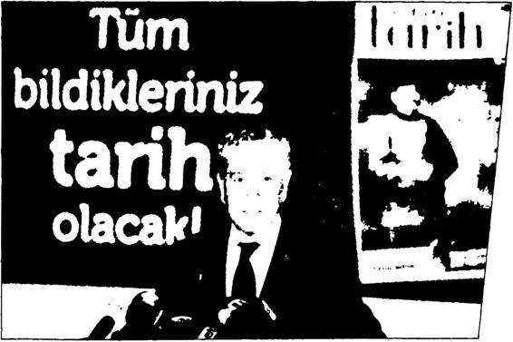 Bülent Arınç Derin Tarih’in tanıtım toplantısında konuşurken Derin tarihle TBMM Başkanlığı yaptığı dönemde tanıştığını belirten Arınç, ‘Geldim Dolmabahçe Sarayı’m geziyorum. ‘Burası Abdülmecit Efendi Kütüphanesi,’ dediler. Ama kapalı. ‘Niye kapa lı? dedim. Efendim buranın gerçek ismi ‘Halife Abdiilmecid Efendi Kütüphanesi’dir. Fakat halifelik kaldırıldığı için halife sözünden ürktü ler ve burayı kapattılar. Fevkalade kızdım, üzüldüm ve derhal buranın açılması talimatını verdim. Biz kütüphaneyi rahmetli Neslişah Sultan Hanımefendi ile birlikte açtık,’ diye konuştu. Son dönemde TBMM arşivlerinde yer alan İstiklal Mahkemesi zabıtlarının içinde bazı konu larda yayın yasağı konan belgelerle yüzleştiğini aktaran Arınç, ‘Uma rım bundan böyle bazı gerçeklerle yüz yüze geleceğiz, en azından Der sim olaylarıyla ilgili gerçekleri yakından görme imkânını yaşayacağız, ’ dedi.
Albayrak Holding CEO’su Dr. Ömer Bolat da, Mustafa Arma ğan'ttt koordinatörlüğünde yayımlanacak olan Derin Tarih’in yurtiçi ve dışından duayen tarihçilerin kalemleriyle geçmişe ışık tutacağını ve bu alandaki yayın boşluğunun kapatılmasına ciddi anlamda destek olacağını söyledi. Bolat, ‘Albayrak Holding olarak Yeni Şafak Gaze tesi, TV Net, Kırmızı Beyaz dergisi. Derin Tarih dergisi ve onların ya yınlarıyla ülkemize, halkımıza, değerlerimize, tarihimize, kültürümüze vefa borcumuzu ödüyoruzdedi.
Albayrak Holding Yönetim Kurulu Başkanı Ahmet Albayrak top lantı sonrasında, Bülent Artnç’a, üzerinde Arınç’ın ‘Geçmişimize sahip çıkarak, geleceğimizi şekillendiriyoruz’ sözünün yazılı olduğu ‘Derin Tarih’ dergisinin kapak fotoğrafının yer aldığı bir tablo hediye etti.”TBMM Milli Saraylar Saray Koleksiyonları Sergi Salonu’nda yapılan tanıtım toplantısına Başbakan Yardımcısı Bülent Arınç’ın da katıldığı Derin Tarih dergisinin AKP hükümeti tarafından desteklen diği açıktır. Ancak Başbakan Yardımcısı Bülent Arınç’m, “ Yani, ‘De rin Tarih’i okumaya başladıktan sonra biz gerçek tarihi de tanımaya, bilmeye başlayacağız,” diyerek yere göğe sığdıramadığı Derin Tarih dergisi, yıllar önce Necip Fazıl Kısakürek’in Büyük Doğu dergisinde dile getirdiği “kurmaca”, “uydurmaca” yakın tarih tezlerini tekrarla maktan öteye geçememiştir.
Dergi ilk sayısında dünyaca ünlü Türk tarihçi Prof. Halil İnalcık’ın da yazarlar arasında olduğunu duyurarak okur sayısını arttırmayı he deflemiştir. Ancak yazılarında ve konuşmalarında Atatürk’ü övüp tak dir eden, Atatürk ve Demokratik Türkiye adlı kitabında Atatürk’ün Türkiye’de demokrasinin kurulmasında önemli katkıları olduğunu belirten Prof. Halil İnalcık’ın Atatürk ve Cumhuriyet düşmanlığı yapmak için çıkarılmış böyle bir “operasyonel” dergide yazı yazması olanaksızdır.
Derin Tarih dergisi beklenildiği gibi AKP Türkiyesi’nde Atatürk ve Cumhuriyet düşmanlığının amiral gemisi olmak için kollan sıvamış tır. Derginin bugüne kadar neredeyse bütün kapak dosyaları Atatürk’e ve erken Cumhuriyet dönemine çamur atmak ve Osmanlı’yı aklamak üzere hazırlanmıştır.
İşte Derin Tarih dergisinin bazı kapak konulan:
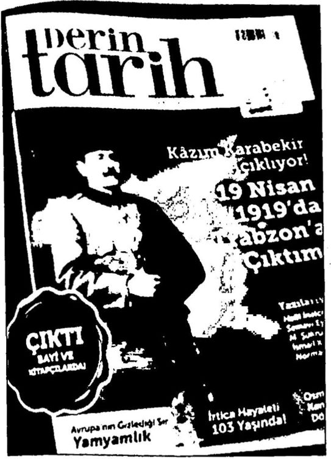 İlk sayıda “Kurtuluş Savaşı’m Atatürk’ün değil de Kâzım Karabekir’in başlattığını” iddia ediyor.
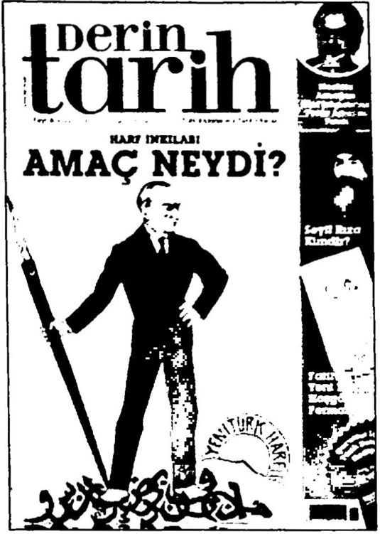 Bu sayıda “Harf Devrimi’nin halkı Osmanlı’dan koparmak için yapıldığını” iddia ediyor.
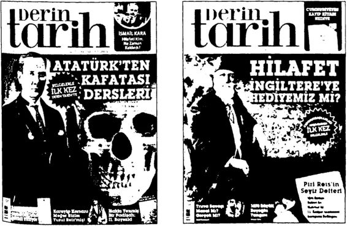 Bu sayıda “Atatürk ’ün antropoloji Çalışmalarının ırkçılık olduğunu” iddia ediyor. Bu sayıda “Atatürk'ün halifeliği İngilizlerin isteğiyle kaldırdığını" iddia ediyor.
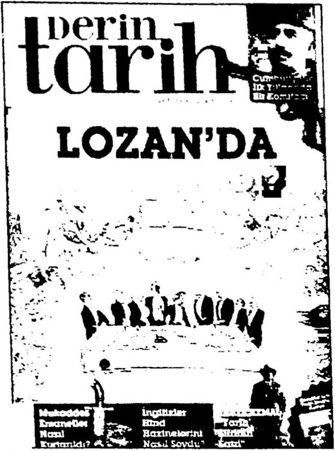 Firnihı 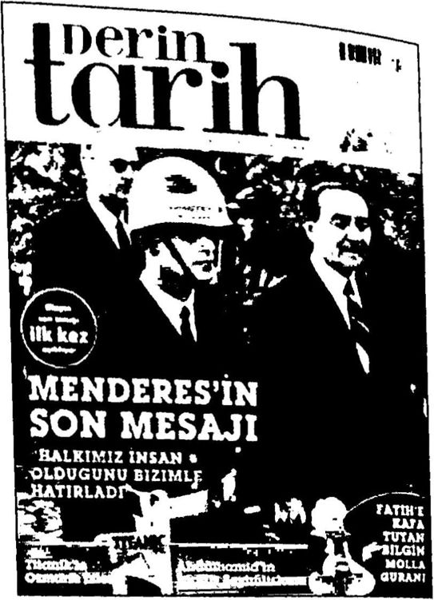 Bu sayıda “Lozan’ın bir zafer değil hezimet olduğunu, Lozan’da Türkiye’nin kaybettiğini” iddia ediyor.
Bu sayıda “Menderes’e kadar halkımızın insan muamelesi görmediğini” iddia ediyor.
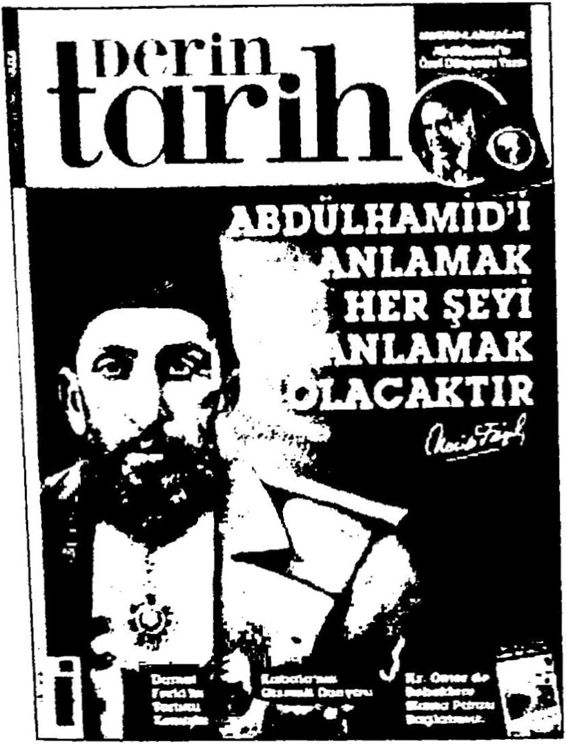 Bu sayıda “Necip Fazıl’a gönderme yaparak II. Abdülhamid’in ‘ulu hakan’ olduğunu” iddia ediyor.
Görüldüğü gibi “Bildikleriniz tarih olacak!” sloganıyla ve AKP cemaat desteğiyle yayımlanan Derin Tarih dergisi bütün derinliğini Necip Fazıl’dan ve Necip Fazıl’ın Büyük Doğu dergisinden almıştır. Neredeyse her sayısında tarihi gerçekleri çarpıtıp Atatürk ve Cumhu riyet düşmanlığı yapan dergi, Şubat 2013 sayısında kocaman bir II. Abdülhamid fotoğrafının yanına kocaman harflerle Necip Fazıl’ın “Abdülhamid'i anlamak her şeyi anlamaktır!” sözünü yazarak ger çekten de Necip Fazıl’ın Büyük Doğu geleneğini devam ettirmek iste diğini göstermiştir. Derin Tarih dergisinin sadece içeriği değil, hükü metle kurduğu ilişki de Necip Fazıl’ı ve onun Büyük Doğu’sunu akla getirmektedir. Bilindiği gibi dün Necip Fazıl, Büyük Doğu’yu çıkarıp Atatürk ve Cumhuriyet’e saldırmak için nasıl ki dönemin DP hükü metine ve Başbakan Adnan Menderes’e sırtını dayamışsa, bugün de Mustafa Armağan Derin Tarih'i çıkarmak için dönemin AKP hüküme tine ve Başbakan R. Tayyip Erdoğan’a sırtını dayamıştır. Görüldüğü gibi aradan geçen 60 küsur yıla rağmen değişen hiçbir şey yok gibidir. 1950’lerde Necip Fazıl, hükümet desteğiyle dergi çıkarıp tarihi gerçek leri çarpıtarak Atatürk’e ve Cumhuriyet’e saldırıp din propagandası ve Osmanlı seviciliği yapıyordu, bugün ise Mustafa Armağan hükümet desteğiyle dergi çıkarıp Atatürk ve Cumhuriyet’e saldırıp din propa gandası ve Osmanlı seviciliği yapıyor. Ayrıntılarla uğraşmayı bırakıp büyük resme baktığımızda görülen şudur: ABD’nin 1950’lerden beri devam ettirdiği yakın tarihi çarpıtarak Atatürk’ü ve onun kurduğu “bağımsız” ve “çağdaş” Türkiye Cumhuriyeti’ni her yönüyle “bağım lı” ve “dinci” bir Yeni Osmanlı’ya dönüştürme projesi 2013’te bütün hızıyla devam etmektedir. Aktörler değişmiştir (Menderes yerine Erdo ğan, Necip Fazıl yerine Mustafa Armağan) ama amaç değişmemiştir.
2012 yılında Derin Tarih dergisi ile birlikte aşağı yukarı aynı dö nemde “Kürtler tarihle, tarih Kürtlerle buluşuyor!” sloganıyla Kiirt Tarihi adlı bir dergi daha çıkmıştır. 2013 yılında ise bu iki dergiye ben zer çizgide Sancaktar dergisi yayımlanmaya başlanmıştır. Sancaktar'ın 17 Mart 2013 tarihli 9. sayısının kapak başlığı “Mustafa Kemal Dev rilmeli!” şeklindedir. Derginin arka kapağında ise bir kamyonun ka sasına yüklenip götürülen Atatürk heykellerine yer verilmiştir. Anla yacağınız 20122013’te Türkiye’de tarih dergileri üzerinden Atatürk düşmanlığı tavan yapmıştır. Sancaktar ^ «İ Hrnrriv*. MUM. tttUudı UUm .
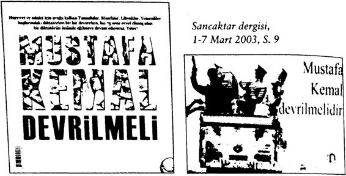 Mustafa Armağan’ın kitaplarında, yazılarında ileri sürdüğü “kur maca”, “uydurmaca” yakın tarih tezlerinden bazıları şunlardır:
Ve daha nice akıllara ziyan “alternatif tezler”! Seç, beğen, inan! Ya da seç, beğen, eğlen!
Dikkat edilecek olursa Mustafa Armağan’ın tek derdi, tıpkı üstadı Necip Fazıl gibi Atatürk ve onun kurduğu Cumhuriyet’tir. Zaten tezle rinin çoğu Necip Fazıl’ın tezlerinin yeniden ısıtılıp toplumun önüne ko nulmasından başka bir şey değildir. Armağan’ın yazılarının ve kitap larının temel amacı Atatürk’ü kötülemek, Atatürk’ün tarihsel rolünü azaltmak, onun yerine yeni kahramanlar yaratmaktır. Dünyada bütün gerçek ve saygın tarihçiler ve liderler Atatürk’ün göz kamaştıran başa rılarını takdir edip onu överken, Mustafa Armağan gibi “görevliler” sabah akşam Atatürk’ü yermekte ve bir kere bile Atatürk’ün herhangi bir olumlu davranışından veya başarısından söz etmemektedirler.
Kendisine verilen “görev” gereği çalakalem Atatürk ve Cumhu riyet düşmanlığı yapan bu Mustafa Armağan ki kendisi edebiyatçı dan bozma bir tarihçidirBaşbakan R. Tayyip Erdoğan tarafından çok “akıllı” biri olarak görülüp “açılım” sürecinde Akil İnsanlar Heyeti’ne seçilmiştir. Bütün ömrünü, bu ülkeyi iki kere kurtaran ada ma, Atatürk’e saldırmaya adamış biri, hangi ölçüye göre akıllıdır, neye göre “akil”dir?
Nitekim “akil” Mustafa Armağan çok geçmeden akilliğini gös terip Türkiye Cumhuriyeti’ni yıkmaya çalışan PKK lideri Abdullah Öcalan’ı Türkiye Cumhuriyeti’nin kurucusu Atatürk’e benzetmiştir! Basına yansımış şekliyle: “Marmara Bölgesi heyetinde yer alan Musta fa Armağan, Abdullah Öcalan’ı Atatürk’e benzetti. Atatürk’ün 1923
Şubatı 'nda verdiği Balıkesir hutbesindeki konuşmasını örnek veren Armağan, 'Unutmayın: Öcalan da Atatürk kadar pragmatik bir lider,' dedi."
Başbakan R. Tayyip Erdoğan’ın yakın tarih tezlerinin en güncel kaynağı, işte bu Mustafa Armağan’ın yazdıklarıdır.
Necip Fazıl, Rıza Nur, Kadir Mısıroğlu, Mustafa Armağan ve di ğerleri... Ortak özellikleri bilerek veya bilmeyerek emperyalizme hiz met etmeleri... Bilerek Atatürk ve Cumhuriyet düşmanlığı yapmaları... Bilerek Karşı Devrim’e hizmet etmeleri... Bunu yaparken hep dillerine doladıkları İslam dinine aykırı olarak gerçekleri çarpıtmaları, halkı kandırmaları...
Sonuç olarak, 1950’lerde Adnan Menderes, Türkiye’yi Atatürk çü, tam bağımsızlıkçı, çağdaş çizginden Amerikancı, bağımlı ve dinci çizgiye taşırken, Necip Fazıl’ın kurmaca tarih tezleriyle kültür politi kalarına “derinlik” kazandırmak istemişti. 2000’lerde ise R. Tayyip Erdoğan, benzer bir çizgi değişiminde Kadir Mısıroğlu’nun, Mustafa Armağan’ın ve diğerlerinin kurmaca tarih tezleriyle kültür politikala rına “derinlik” kazandırmaya çalışmaktadır. Ancak tarihe mal olmuş gerçekleri birkaç “güdümlü” ve “görevli” sözde tarihçinin kurmaca tezleriyle altüst etmek en azından uzun vadede imkânsızdır. Düşün senize, bu milleti iki kere kurtaran Mustafa Kemal Atatürk’ün göz kamaştıran başarısını gölgelemek, yok etmek mümkün müdür? Hiç güneş balçıkla sıvanır mı?
Aslında Karşı Devrim’in en “güdük” kaldığı alanlardan biri ta rihtir. 1950’lerden beri Cumhuriyet’in bütün kazanımlarını altüst etme başarısını gösteren Karşı Devrimci iktidarlar, ellerindeki bütün olanaklara rağmen gerçek, saygın, iyi bir tarihçi yetiştirme başarısı nı gösterememişlerdir. Aslında durum o kadar vahimdir ki! Örneğin Karşı Devrim’in görevli tarihçilerinin ana kaynaklarından Hayat ve Hatıratımın yazarı Rıza Nur, kadın olmak istediğini, kendisine teca vüz edildiğini, karısının kendisini boynuzladığını yazacak kadar ruhsal dengesini kaybetmiş aslen bir doktor... Necip Fazıl, para karşılığı ya zılar yazmış, yüz seksen derece fikir gelgitleri yaşamış aslen bir şair... Mustafa Armağan, cemaatin ve hükümetin gölgesinde güdük tezler üreten aslen bir edebiyatçı, editör... Kadir Mısıroğlu ise “akıl hasta nelerinde” yattığını itiraf etmiş, başında fesle dolaşan biridir. Bunların “sinekten yağ çıkararak” ileri sürdükleri tezler gerçek tarihçilerin alay konusudur.
Kadir Mısıroğlu ve Mustafa Armağan sıkça AKP etkinliklerinde, R. Tayyip Erdoğan’ın yanı başında boy göstermiştir.
MENDERES DE TARİHLE YÜZLEŞMİŞTİ Türkiye’de erken Cumhuriyet dönemiyle yüzleşen ilk lider, ilk başbakan AKP Genel Başkam R. Tayyip Erdoğan değildir. Bu dönem le ilk “yüzleşen” DP Genel Başkanı Adnan Menderes’tir. Menderes’in devamı olduğunu bizzat ifade eden Erdoğan, siyasi üstadı Menderes’in birçok özelliği gibi bu özelliğinden de fazlaca etkilenmiştir.
Türkiye’de 1946’da başlayan “kısmi” Karşı Devrim sürecinde erken Cumhuriyet dönemindeki bazı kazanmalardan ilk ödünler ve rilmeye başlanmıştır. Örneğin laiklik aşındırılmış, tam bağımsızlık unutulmuş, Atatürk’ün kültür, uygarlık eksenli milliyetçilik anlayışı ırkçı Turancılığa dönüştürülmüş ve Atatürk’ün Türk Tarih Tezi yerine Türkİslam Sentezi’nin altyapısı hazırlanmıştır.
Türkiye’de 1950’de DP'nin iktidar olmasıyla birlikte “tam” bir Karşı Devrim süreci başlamıştır. Adnan Menderes’in başbakan olduğu 1^501960 arasındaki DP döneminde Cumhuriyet’in kuruluş felsefesi yerle bir edilmiştir. Atatürk’ün Cumhuriyetin temeline yerleştirdiği üç ana direk; tam bağımsızlık, akıl ve bilim eşliğinde çağdaşlaşma ve ulu sal egemenlik/demokrasi yok edilmiştir.
Özetlemek gerekirse:
1950'de Türkçe ezan (CHP ile birlikte) yeniden Arapçaya çev rilmiştir. Radyoda Kur’an, mevlit okutulmaya başlanmıştır. İlkokul programlarına din dersleri konulmuştur. 1951’de 1925 tarihli Tekke ve Zaviyelerin Kapatılması’na Dair Kanun’un 1. maddesi değiştirilerek 19 türbenin açılmasına izin verilmiştir. 1930’larda öğrenci yetersiz liği nedeniyle kapatılan, 1949’da kurs şeklinde açılan imamhatipler 1951’de okula dönüştürülmüştür. Yine 1951’de Halkevleri kapatılmış tır. 1953’te ortaokullara din dersleri konulmuştur. 1954’te Köy Ensti tüleri kapatılmıştır.
Görüldüğü gibi akılcı, bilimsel ve laik politikalar terk edile rek dinsel nitelikli politikalara ağırlık verilmiştir. Bu yapılırken de Cumhuriyet’in ilk 15 yılında Atatürk’ün yaptığı gibi dini hurafelerden arındırmayı, anlaşılır kılmayı amaçlayan hiçbir çalışma yapılmadan, hurafelerle sarıp sarmalanmış, eski geleneksel din anlayışı yeniden top luma boca edilmiştir. Bu Türk devrimine yapılmış büyük bir ihanettir.
Ayrıca DP döneminde Tahkikat Komisyonları kurulmuş, Vatan Cephesi oluşturulmuş, gazeteciler, yazarlar tutuklanıp hapsedilmiş, gazeteler, dergiler kapatılmış, muhalefet partilerinin miting yapmaları, hatta radyodan konuşmaları bile engellenmiş, DP’ye oy vermeyen bazı il ve ilçeler cezalandırılmış, sendikal haklar kısıtlanmış, gösteri ve yü rüyüşler polis gücüyle engellenmiş, üniversiteler ve mahkemeler baskı altına alınmış, kültür sanat politikaları ve milli eğitim, akıl ve bilim ilkeleri yerine din ilkleri doğrultusunda belirlenmiş ve en önemlisi de Türkiye kayıtsız koşulsuz, gizli açık, sözlü yazılı sayısız ikili anlaşma ile her konuda ABD’ye bağımlı hale getirilmiştir. Özetlediğimiz bu politikalarıyla Cumhuriyet’in kuruluş felsefesini aşındıran, Atatürk devrimlerini altüst eden Menderes, Atatürk’ün “tam bağımsız” ve “çağdaş” Türkiye hedefini bir kenara bırakarak, ABD’ye “tam bağımlı” ve “bağnaz” bir Türkiye yaratmanın ilk adımlarını da at mıştır. Menderes, bu Karşı Devrim politikalarının halk gözünde inandı rıcılık kazanması için Türk Devrimi’ni ve bu devrimin mimarı Atatürk’ü ve aynı zamanda siyasi rakibi de olanİsmet İnönü’yü alabildiğince eleştirmiştir. Bu eleştirilerini hem örtülü ödenekten sürekli beslediği Ne cip Fazıl aracılığıyla hem de bizzat kendi ağzından dile getirmiştir.
Bu eleştirilerin altında yatan nedenleri doğru anlamak için bü yük resme bakmak gerekir. Şöyle ki: II. Dünya Savaşı sonrasındaki soğuk savaş sürecinde komünist SSCB’ye karşı kapitalist ABD’nin ka natları altına giren Türkiye, Kore’ye asker gönderip ne kadar sadık bir müttefik olduğunu kanıtladıktan sonra NATO’ya, IMF’ye alınmış, ABD’nin kredi muslukları açılmıştır. O günlerde Türkiye, ABD’nin Ortadoğu’daki jandarması olmuştur. ABD, SSCB’den yayılan komü nizme karşı Afganistan, İran ve Irak gibi İslam ülkelerinde olduğu gibi Türkiye’de de “dinin” en etkili silah olduğunu görerek bu silahı SSCB’ye ve komünizme doğrultmuştur. İşte bu sürecin Türkiye’deki aktörü Menderes, iktidar olur olmaz hemen kolları sıvayarak erken Cumhuriyet dönemini; Atatürk’ü, İnönü’yü eleştirmeye, şer’i, dini yönü ağır basan Osmanlı Devleti’ni, Osmanlı padişahlarını yüceltmeye başlamıştır. Bu doğrultuda erken Cumhuriyet döneminde ara verilen İstanbul’un Fethi kutlamalarını yeniden başlatmış, Osmanlı padişahla rının türbelerini açtırmıştır.
Menderes, 19231950 arasındaki erken Cumhuriyet döneminden, “27 yıllık baskı ve karanlık dönem/”, “27 yıllık zulüm dönemi/” ola rak söz edilmesine zemin hazırlamıştır. Bu kafaya göre Atatürk ve İnönü de o dönemin zalimleridir!
Menderes Karşı Devrimcidir. Atatürk’ün Bağımsızlık ve Aydın lanma Savaşı'nı içine sindirememiştir. Yıllarca CHP’de politika yapmış olmasına karşın Cumhurivet’in kuruluş felsefesini, Atatürk devrimleri ni içselleştirememiş, anlamını ve önemini kavrayamamıştır. Bu neden le DP'yi kurup iktidar olur olmaz kendinden önceki devrimci dönemi topyekûn tasfiye etmeyi amaçlamıştır. Şevket Süreyya Aydemir’in ifa desiyle: “ Yani mazinin ve maziden gelen hatıraların tasfiyesi. Atatürk de dahil olduğu halde... Bu mücadelesinde insafsızdı. Başta Atatürk miti, sonra ikinci Adam; daha sonra da onlardan gelen bazı mües seseler, bilhassa Cumhuriyet Halk Partisi ve Halkevleri gibi... Hatta daha derine inelim: İstiklal Savaşıinn her şeye damgasını vuran hatıra sı bile onu rahatsız ediyordu. Adlarına inkılâplar dediğimiz hareketler, Lozan, İkinci Dünya Harbi imtihanı, hülasa geriye baktığımız zaman her şey. Kabil olsa yakın tarihimizi silmek ve yeniden başlatmak ister gibiydi. ”
Menderes, Atatürk’lü İnönü’lü erken Cumhuriyet dönemini, Türk tarihinin şan ve şeref sayfalarından birini “reddi miras” etmiştir. Atatürk’ü ve İnönü’yü sadece Türk devrimi konusunda değil, Kurtuluş Savaşı konusunda bile eleştirmiştir. Örneğin, “İstiklal Savaşı diyorsu nuz, bu pekâlâ üç ayda bitebilirdir demiştir.
Aslında Türkiye’yi her bakımdan Amerikan emperyalizmine ba ğımlı hale getiren Menderes’in, “Ya istiklal, ya ölüm!” diye yola çıkan Atatürk ve silah arkadaşlarının emperyalizmi dize getirerek kazandık ları Kurtuluş Savaşı’nı küçümsemesi doğaldır! Ancak Menderes, o kü çümsediği Kurtuluş Savaşı’na katılmamıştır? Ali İhsan Paşa’nın anla tımına göre, o sıralarda 20 yaşlarındaki Menderes işgal başladığında Aydın’da aile çiftliğinin ve çevresinin korunmasıyla ilgilenmiştir.
Menderes, 1950’de seçimleri kazanıp başbakan olduktan sonraki ilk hükümet konuşmasında Kurtuluş Savaşı’ndan ve Atatürk’ten hiç söz etmemiştir.
“Adnan Menderes’in 29 Mayıs 1950’de Meclis’te okuduğu hü kümet nutku yeni iktidarın, tabii Celal Bayar’ın da sorumluluğuna katıldığı eski 27 yıllık idareyi, Atatürk’ün adına ve hatırasına tek ke lime bile temas etmeden topyekûn mahkûm ediyordu. Menderes bu nutkunda Atatürk'ün adına ve hatırasına tek kelime ile temas etmedi. DP’nin seçim zaferini, gelmiş geçmiş inkılâpların en büyüğü saydı. Bu düşündürücü bir başlangıçtı. Acaba Bayar kendi mazisini mi inkâr edi yordu. Yoksa Menderes’in dilinden bu sözler Celal Bayar’a rağmen mi dökülüyordu?”
Menderes’e göre gerçek inkılâbı/devrimi Atatürk değil, kendisi yapmıştır! Ona göre 14 Mayıs 1950 seçimleri sonucunda DP’nin ikti dara gelmesi en büyük devrimdir! 2 Haziran 1950’de TBMM’deki ko nuşmasında bu düşüncesini, “14 Mayıs seçimleri ile memlekette, şimdi ye kadar yapılanlarla ölçülemeyecek ehemmiyette büyük bir inkılâbın en mühim merhalesi aşılmıştır. ” “O halde cumhuriyetin çok evvel ilan edilmiş olmasına rağmen 14 Mayıs tarihini bu memlekette tam manada demokratik bir cumhuriyetin başlangıcı olarak kabul etmek hakikatin ta kendisidir, ” diye ifade emiştir.
Menderes, Atatürk’ten ilk olarak 4 Mayıs 1951 tarihinde TBMM’deki bir konuşmasında söz etmiştir. Meclis’te “Atatürk Aley hine İşlenen Suçlar Hakkındaki Kanun” görüşmeleri sırasında kürsüye gelerek şunları söylemiştir:
“Arkadaşlar, biz tenkit hürriyetini kaldırmıyoruz. Ben kendisiyle beraber tenkit edeceğim. Atatürk’ü, bir memleketin kurulmasında baş ta bulunan bir zat mütalaa etmek başka, demokratik inkılâpları tahak kuk ettirmiş midir, ettirmemiş midir zaviyesinden mütalaa etmek baş kadır. Mevzuda buraya geldiğimiz zaman bunun tenkidini bizzat bizler yapmışızdır ve bu tenkidi yapmakta devam edeceğiz. Bu Atatürk'ün tarihte şaşaa ile daima parlayacak olan hüviyetini asla küsufa (güneş tutulmasına) uğratmaz. Onu biz demokratik inkılâbın muvaffakiyet li bir başarıcısı olarak mütalaa etmek mevkiinde olmayacağız. Bizim maksadımız tenkit, vicdan, fikir hürriyetini takyit (bağlama) değil, tah kir (alçaltma), terzil (rezil etme) hürriyetini ortadan kaldırmaktır. Ata türk İnkılâbı yapmadı mı? Yaptığı inkılâbın temeli olan demokratik inkılâbı başardı mı? Başaramadı. Yaptığı inkılâp hazırlayıcıdır...”Menderes, başbakan olduktan bir yıl sonra, “Atatürk’ü Koru ma Kanunu” görüşmeleri sırasında Atatürk’ten ilk kez söz ederken bile Atatürk’ü eleştirmeyi ihmal etmemiştir. Atatürk’ün demokratik inkılâpları gerçekleştiremediğini belirterek, “Onu biz demokratik inkılâbın muvaffakiyetli bir başarıcısı olarak mütalaa etmek mevki inde olmayacağız,” demiştir. Menderes’e göre Atatürk demokratik inkılâpları gerçekleştirememiştir! Hatta ona göre Atatürk, milli iradeyi de tam olarak hayata geçirememiştir! Milli irade ancak DP’nin iktidara gelmesiyle tam olarak tecelli etmiştir! Bir konuşmasında şöyle demiştir: “ Tarihimizde ilk defadır ki yüksek heyetimiz milli iradenin tam ve ser best tecellisi neticesinde millet mukadderatına hâkim olmak mevkiine gelmiş bulunuyorsunuz. ”
Böylece yeri gelmişken Menderes ve onun zihniyetindeki karşı devrimcilerin 60 yıldır aralıksız tekrarladığı “Atatürk demokrasiyi ku ramadı, kurmak istemedi! Atatürk diktatördü/” şeklindeki tezden de söz edelim. Anlaşılan o ki Menderes, demokrasi derken “çok partili sistemi” ve “serbest seçimleri” anlamaktadır. Ancak bu demokrasi ta nımı son derece eksik bir tanımdır. Demokrasi çok partili sistem ve serbest seçimlerden önce tam bağımsızlıktır. Demokrasi padişaha, sul tana, halifeye, şeyhe, şıha, yani kula kul olmaktan kurtulup yalnızca Allah’a kul olmaktır. Birey olmaktır. Demokrasi özgürlüktür, eşitlik tir, barıştır, kardeşliktir. Demokrasi halkçılıktır, laikliktir. Demokrasi kadın haklarıdır. Demokrasi çağdaş ve bilimsel eğimdir. Demokrasi, ağalık düzeninin yıkılmasıdır. Atatürk, demokrasinin bu ön şartlarının birçoğunu hem de yokluk ve yoksulluk içinde hayata geçirmeyi başar mıştır. Atatürk, nazi ve faşist diktatörlüklerin yükseldiği 1930 yılında, Vatandaş İçin medeni Bilgiler kitabında demokrasiyi, “Yükselen bir deniz” olarak tanımlayıp, demokrasinin üstün özelliklerini sıralamış ve demokrasiye karşı akımları tek tek açıklayıp eleştirmiştir. Her şey bir yana, Atatürk yeryüzündeki en baskıcı, en otoriter idare olan padişah lığa/sultanlığa son vermiştir. En önemlisi de bütün devrimleri Meclis’in onayından geçirmiştir. Atatürk dönemi, Tek Parti dönemi olmasına karşın milletvekilleri bile yargılanabilmiştir. Tek Parti içinde farklı gö rüşler seslendirilebilmiştir. Nitekim o Tek Parti’den 1946’da başka bir parti (DP) daha çıkmıştır. Atatürk, savaştan yeni çıkmış, geri kalmış, yoksul ve eğitimsiz bir ülkede gerçek ve sağlam demokrasinin çok par tili sistemi kurup halkın önüne sandık koymakla mümkün olmayacağı nı görecek kadar gerçekçidir. 1925 Terakkiperver Cumhuriyet Fırkası ve 1930 Serbest Cumhuriyet Fırkası denemelerinin başarısız olması bu düşüncesini keskinleştirmiştir. Bu nedenle ulusun bağımsızlılığını ve egemenliğini sağladıktan hemen sonra ulusun sağlık, ekonomi, eğitim, kültür, bayındırlık sorunlarını çözmeye, kadın haklarına, akıl ve bilim eşliğinde çağdaşlaşmaya önem vermiştir. Bu nedenle eğer Türkiye 1946’da çok partili hayata, 1950’de demokrasiye geçebilmişse bunun en önemli nedeni Atatürk’ün önderliğindeki çağdaş Türk Devrimi’dir. Ancak Menderes ve onun düşünsel takipçileri nedense bütün bu ger çeklerden habersizdir!
Menderes aynı konuşmasında Atatürk’ten şöyle söz etmiştir:
“Biz Atatürk’ün inkılâplarım, yaptıklarını, yapmadıklarını ko nuşabiliriz, tek parti, tek şef vecizesi varsa, tatbikatta varsa, elbette bunları müdafaa etmekte kendileriyle beraber değiliz. Biz kayıtsız şart sız ne varsa onların hepsini müdafaa etmek mevkiinde değiliz. Fakat hepiniz bilirsiniz ki Atatürk, müspet, menfi, ileri, geri bütün hayatının muhasebesi yapıldıktan sonra büyük adamdır, ileri adamdır, mem leketi kurtaran adamdır ve ileriyi gören prensiplerinin galip vasfının ekseriyeti kahiresi (üstün çoğunluk) bu memleketin nefine (yararına) olan prensiplerdir ve bunlar onun şahsında, şahsiyetinde, hüviyetinde kişileşir. ”
Görüldüğü gibi Menderes, “Atatürk, müspet, menfi, ileri, geri bii tiin hayatının muhasebesi yapıldıktan sonra büyük adamdır, ileri adam dır, memleketi kurtaran adamdır...” diyerek, bir taraftan Atatürk’ü överken, diğer taraftan yermiş; Atatürk’ün “menfi” ve “geri” yönleri olduğunu belirtmiştir.
Şevket Çizmeli’nin yerinde tespitiyle, “ Atatürk’ü koruyor görüne rek bizce haksız birtakım eleştirilerde bulunmak özellikle de bunu Ata türk heykellerinin kırıldığı günlerde onu korumak görüntüsü altında yapma, Menderes’in ilerideki görüş ve uygulamaları da nazara alınırsa, hiç de içten sayılmamalıdırd’
Menderes özünde Atatürk devrimlerine karşıdır, ancak taktik ge reği devrimlerin tamamına değil, bazılarına karşıdır! Nitekim Atatürk devrimlerini “Millete mal olanlar ve millete mal olmayanlar” diye ikiye ayırıp, millete mal olanları koruyacağım söylemiştir.
Menderes, 29 Mayıs 1950 tarihinde Meclis’te yaptığı konuşmada, "... Gene seçim beyannamemizde yazıldığı üzere millete mal olmuş inkılâplarımızı koruyacağız,” demiştir.